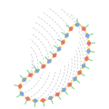
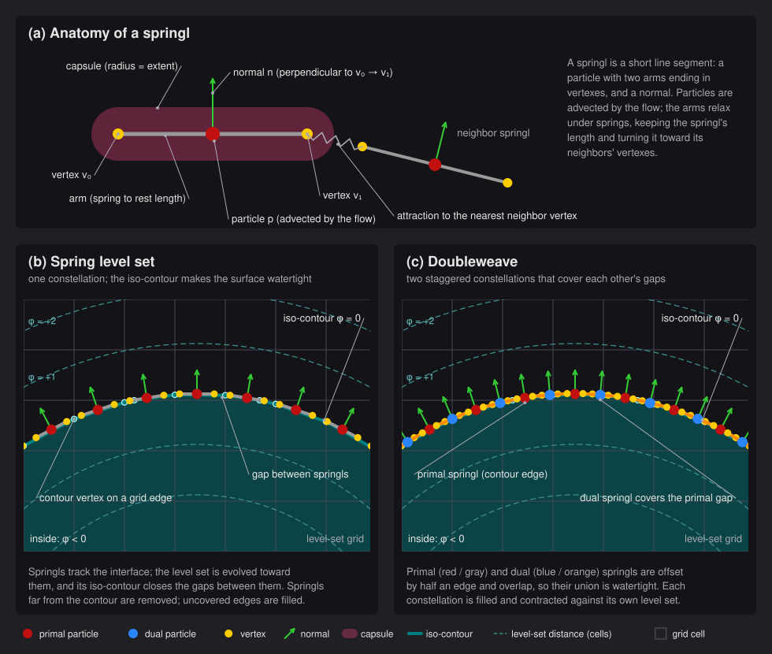
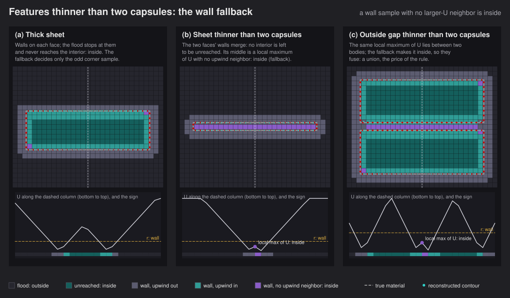
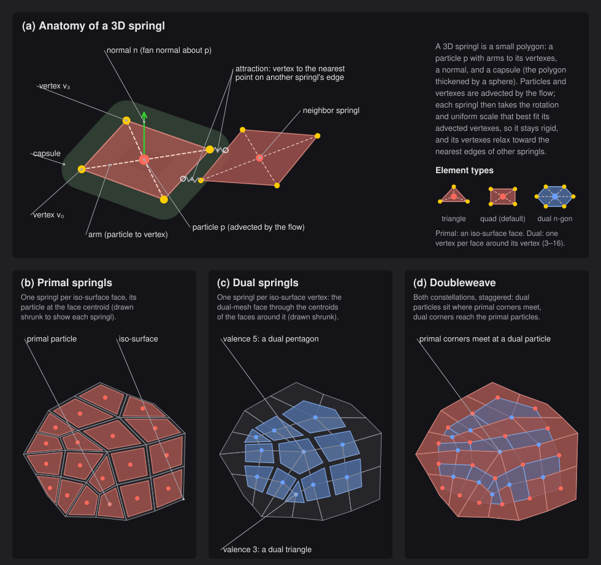
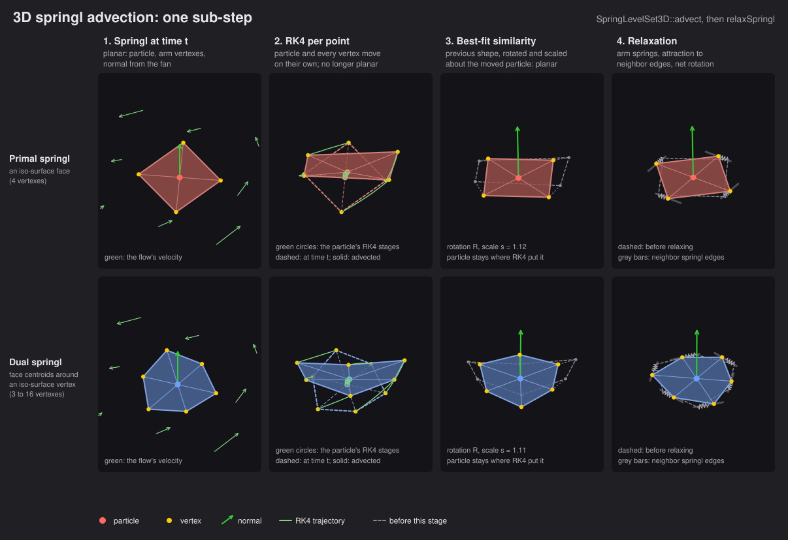
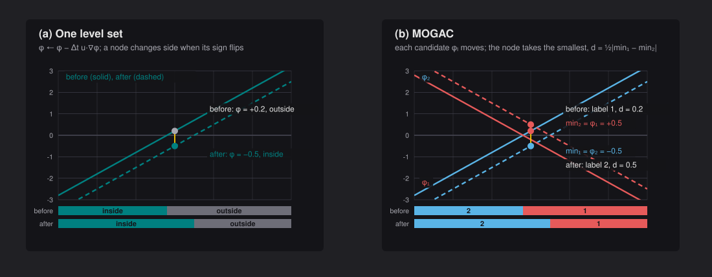
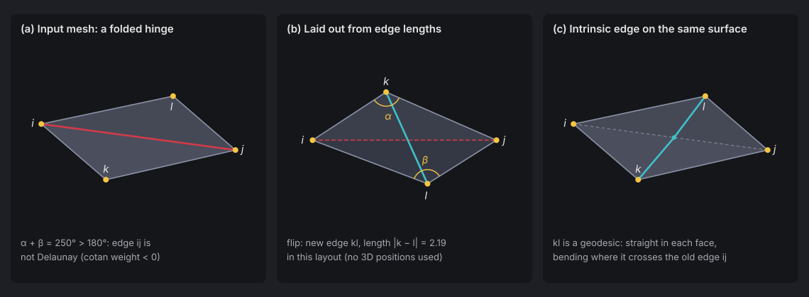
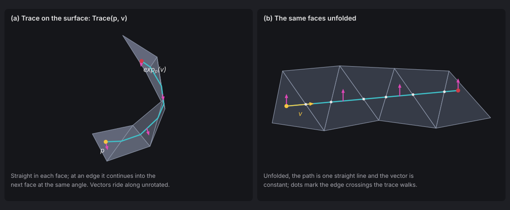
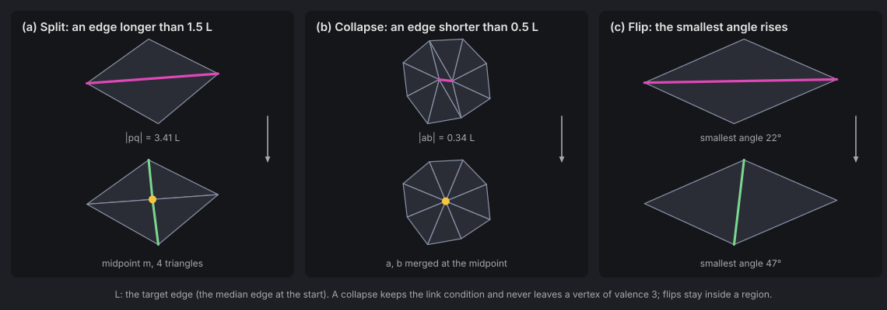
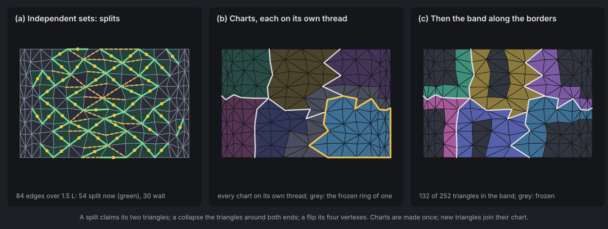

Springls (Spring Level Sets)
Deformable models that are parametric, watertight, grid-adaptive, and semi-Lagrangian in 2D and 3D
Abstract
Meshes track deforming surfaces precisely but must be re-meshed under large deformation and cannot easily change topology; level sets change topology freely but lose sub-cell detail and are bound by a CFL limit. Spring level sets [1] are a mesh-free alternative: they carry the interface on small, disconnected Lagrangian elements, springls, which are resampled locally instead of re-meshed, while a level set supplies the topology. This project is a C++ implementation of the method in 2D and 3D, together with three extensions. DoubleWeave springls use two interleaved, staggered constellations whose union covers the interface without gaps, so each can detect and refill its own holes. Adaptive variants keep a block-adaptive quadtree / octree level set at its finest resolution only in a band around the springls. A semi-Lagrangian DoubleWeave rebuilds the level set from the springls at every sub-step instead of evolving it with a PDE, signing it by topology rather than by springl normals, which removes the CFL limit. As Eulerian baselines, the basic level set method (2D and 3D, uniform and adaptive) and MOGAC, which tracks many objects in one label + distance field, run on the same level-set code without springls. On the Enright deformation test [2] the adaptive methods recover the 2D circle within 0.7% area and the 3D sphere within 2.5% volume where the uniform methods lose the interface, and the semi-Lagrangian DoubleWeave reaches the lowest shape error of all, using 6–28× fewer sub-steps when the CFL limit binds. Intrinsic springls carry the same method onto curved triangle-mesh surfaces: springls move along an adaptively refined intrinsic Delaunay triangulation by the discrete exponential map, and the level set is rebuilt on its vertexes every sub-step. Mesh tracking carries the interface on one closed triangle mesh instead, kept well shaped by edge splits, collapses and Delaunay flips and never changing topology, with its level set rebuilt from the mesh by the same semi-Lagrangian rule; it returns the 3D sphere within 0.3% volume with an eighth of the semi-Lagrangian DoubleWeave's mean shape error.
1Introduction
Deformable models — active contours in image segmentation, free surfaces in fluid simulation, tracked organs in medical imaging — must follow an interface through deformations that are often large, non-rigid and fluid-like [20][19]. The two classical representations each fail in a different part of that range.
Meshes are Lagrangian but connected. A triangle mesh tracks the boundary explicitly by moving its vertexes, so it is precise, carries point correspondences, and is cheap to advect. But its connectivity is a liability under large deformation: where the surface stretches, triangles grow and sample it too coarsely; where it compresses, they crowd, fold, flip and self-intersect. The mesh must therefore be re-meshed periodically, and because every triangle must stay connected to its neighbors to keep the surface watertight, re-meshing is a global, delicate operation that disturbs vertex tracking. Topology changes are harder still: two fronts that collide or a filament that pinches off require detecting the event, cutting the mesh and stitching it back together without self-intersections [18][21]. For these reasons meshes are avoided where the model undergoes large non-rigid deformation, is expected to change topology, or is likely to self-intersect [19].
Level sets are robust but Eulerian. A level set [4][16] stores the interface implicitly on a fixed grid, so it never needs re-meshing, cannot self-intersect, and merges and splits for free. But it has no parameterization: it cannot carry correspondences or labels on the surface, its explicit upwind update moves the interface at most a fraction of a cell per step (a CFL limit), and numerical diffusion erases any feature thinner than a grid cell — the volume loss that the Enright test [2] was designed to expose.
A mesh-free Lagrangian representation. Spring level sets [1] take the precision of the mesh and the robustness of the level set by removing the mesh's connectivity. The surface is a constellation of small, disconnected elements (springls) advected by the flow, held together only by soft attraction forces; a level set evolved toward them supplies the topology and a watertight surface. This changes what each hard mesh operation costs:
- No re-meshing. Because no springl is connected to another, resampling is purely local: springls that drift off the surface are deleted, and gaps are filled by adding new springls on the contour. There is no global re-triangulation, however large the deformation, and new springls inherit correspondences from their neighbors.
- Free topology changes. Merging and splitting are decided by the level set, not by cutting and stitching elements. Springls left without surface beneath them are simply contracted away.
- Topology changes are easy to detect. The level set's contour (or surface) components, and in the semi-Lagrangian method the connected regions of the exterior flood, are the topology; a change shows up as a component appearing, vanishing or splitting, with no collision detection between elements.
- No self-intersections. The surface that is output is always a level-set iso-contour, which cannot self-intersect, while springls supply its sub-cell detail.
The original method still couples the springls to the grid in two ways, which motivate this work. First, a single constellation leaves small gaps between neighbors, and a gap is only detected through the level set, which itself depends on the springls. Second, the level set chases the springls with an explicit upwind PDE, so it can move at most half a cell per update: every advection sub-step is capped by a CFL condition the Lagrangian springls themselves do not need, and at coarse resolution thin features fall below a cell and vanish. The end point of this work is a representation that is mesh-free and semi-Lagrangian: springls carry all of the geometry, and the level set is not evolved at all but rebuilt from them at every step, as a by-product used only for topology and fill — so the time step is set by how the flow distorts the springls, not by the grid.
This project contributes:
- DoubleWeave springls (§3.9): a primal constellation on contour edges and a dual constellation on contour vertexes, staggered by half an edge, each with its own level set for detecting and filling holes.
- Adaptive springls (§3.10): a block-adaptive quadtree (octree in 3D) narrow band [8][13] kept at its finest depth around the springls and moved with them every sub-step, with a one-sided springl correction and merging of compressed springls.
- Semi-Lagrangian DoubleWeave (§3.11): a level set rebuilt each sub-step from the springls alone, signed by an exterior flood around capsule walls and an upwind sweep, with strain-limited rather than CFL-limited time steps.
- 3D versions of all methods (§3.12) with quad, triangle and variable-valence dual springls, octree surface nets, and checkpointing.
- Enright deformation tests in 2D and 3D (§4), with GUI and headless runners that measure area/volume error, shape error, springl counts and timing.
2Background
2.1Level sets and narrow bands
A level set represents an interface as the zero crossing of a function φ, here a signed distance (negative inside). Moving the interface with a velocity field u means solving ∂φ/∂t + u·∇φ = 0, discretized with upwind differences [4][17]. Only values near the zero crossing matter, so narrow-band methods [13] store and update a band of cells around it; the sparse-field method [3] goes further and evolves only the cells adjacent to the zero crossing, rebuilding a few distance layers around them. Hierarchical sparse grids such as VDB [8] store the band in small dense blocks in a shallow tree. Pure level sets lose mass wherever the interface thins below a cell, which the particle level set method [2] counteracts with marker particles that correct φ, and which the Enright test was designed to expose.
2.2Spring level sets

Spring level sets [1] represent the interface with one constellation of springls: short, disconnected line segments (a particle with two arm vertexes) that are advected by the flow. The springls alone are not connected to each other, so they leave small gaps. A level set evolved toward the springls supplies the topology, and its iso-contour is the watertight representation of the surface. Each step, the springls are resampled against that contour: springls far from it are removed, and gaps along it are filled with new springls. Springls are held together by springs: each arm is pulled toward its rest length, and each arm vertex is attracted to the nearest vertex of a neighboring springl.
2.3Related work
Explicit surface trackers with level-set-driven topology changes [18] keep a connected mesh and resolve collisions locally; springls avoid connectivity altogether. Semi-Lagrangian contouring [14] rebuilds the surface from scratch each step from a semi-Lagrangian backtrace of the previous surface [15], avoiding the CFL limit of explicit level-set updates; the semi-Lagrangian DoubleWeave applies the same idea with springls as the Lagrangian carrier. Mesh extraction uses marching squares with saddle disambiguation [5] in 2D and surface nets [6] in 3D, with polygons on minimal octree edges as in dual contouring [7].
3Method
This section walks through one time step of every method, in the order the code runs it. All
springl methods share the same skeleton (SpringLevelSet2D::step()); DoubleWeave, adaptive and
semi-Lagrangian variants override individual stages. The level-set methods without springls (the basic
level set method and MOGAC) are described in §3.13. Positions are in level-set pixels; h
is the local cell size (1 on uniform grids, 2−depth on adaptive ones). Pseudocode is
simplified from the source in src; names in monospace refer to
functions or tuning keys there.
3.1State and notation
A springl s is a particle ps with two arm vertexes vs,0, vs,1 (in 3D, a planar polygon of 3–16 vertexes around its particle), an outward normal ns, a size class (scale) σs, a velocity, and for tracking, a correspondence point on the initial interface. Alongside the springls, the simulation keeps:
- φ — a signed distance level set (negative inside) on a narrow band, either a uniform grid
(
NarrowBand2D) or a block-adaptive quadtree / octree (AdaptiveGrid2D,AdaptiveGrid3D); - U — the unsigned distance to the springls, |x − closest springl|, clamped to
unsignedMaxDistanceand computed with a segment (triangle) BVH [11]; - C — the iso-contour (iso-surface) of φ: the watertight representation of the interface, and the reference that springls are resampled against.
3.2The time step
One step() is advectionSubstepsPerStep (3) advection sub-steps; each
sub-step advects the springls, moves the level set to them, and resamples the springls against the
new contour.
procedure Step()
for sub ← 1 … advectionSubstepsPerStep do
Δt ← Advect(maxStepPixels, schedule cap) // RK4 + similarity fit
t ← t + Δt
if level set is rebuilt from springls then // semi-Lagrangian only
RebuildLevelSetAndContour()
Relax()
else
Relax()
EvolveLevelSetAndContour() // U, upwind PDE, contour, refine
Contract() // drop springls far from C
repeat // close every gap (≤ 16 passes)
n ← Fill(); Relax()
until n = 0
UpdateNormals(); UpdateUnsignedDistance()
UpdateTracking() // new springls inherit correspondences
if adaptive then MergeCompressedSpringls()3.3Advection
Particles and every arm vertex are moved independently by classic fourth-order Runge–Kutta,
with the velocity field (or the analytic Enright velocity) evaluated at each stage time so
time-varying flows are integrated correctly. The step size comes from the first RK stage: the
fastest particle moves at most maxStepPixels (⅓ px) — the CFL-style cap the level-set
PDE needs. The semi-Lagrangian method replaces it with a strain limit
(§3.11).
Advecting the vertexes independently bends and stretches a springl. Rather than accepting that, each springl is replaced by the similarity transform (rotation + uniform scale about its advected particle) of its previous shape that best fits its advected vertexes, the least-squares solution of Umeyama [10]. In 2D this is a single complex number z: with arms ae = veold − pold and we = venew − pnew,
z = Σe conj(ae) · we / Σe |ae|², ve ← pnew + z · ae
so the springl stays straight (planar in 3D), its particle stays where the flow put it, and its normal turns with the flow.
function Advect(maxStep, maxΔt)
k₁[s] ← u(ps, t) for all s
Δt ← min(maxStep / maxs|k₁[s]|, maxΔt) // SL: strain-limited instead
for all springls s in parallel do
ps ← ps + RK4(ps, Δt)
for each vertex e: vs,e ← vs,e + RK4(vs,e, Δt)
UpdateNearestNeighbors() // on the flow-advected vertexes
for all springls s in parallel do
z ← best similarity (rotation·scale) mapping old arms onto new arms
vs,e ← ps + z · (vs,eold − psold)
return Δt3.4Relaxation
Relaxation keeps neighboring springls joined end-to-end and their arms near rest length. Each
arm vertex has at most one nearest neighbor: the closest arm vertex of another springl within
nearestNeighborDistance (found with a hash grid, SpringlHashGrid2D). Each of
relaxIterations (4) iterations computes, per springl and in parallel:
- Attraction toward the neighbor vertex q, with a saturating
weight w = atanh(0.999 · clamp((|q − v| − rsep) / ((½ + rsep) σ), −1, 1)),
so a vertex is pulled hard when far from its neighbor and pushed back when overlapping it;
the motion is m = Δτ ·
sharpness· w · (q − v). - Arm spring: a radial force Δτ · k · (Lrest − |v − p|) with
k =
springConstant. - Moment: the tangential components of both motions sum to a rotation angle θ = Σ me × te, and the springl rotates rigidly about its particle by θ.
- New arm length = clamp(L + m·t + spring, ε,
maxArmLength·σ); the particle never moves.
procedure RelaxSpringl(s, Δτ)
θ ← 0
for each arm e do
a ← vs,e − ps; Le ← |a|; te ← a / Le
me ← 0
if neighbor q of vs,e exists then
w ← atanh(0.999 · clamp((|q − vs,e| − rsepσ) / ((½ + rsep)σ), −1, 1))
me ← Δτ · sharpness · w · (q − vs,e)
fe ← Δτ · k · (Lrest − Le)
θ ← θ + me × te
for each arm e do
r ← clamp(Le + me·te + fe, ε, maxArmLength·σ)
vs,e ← ps + Rotateθ(r · te)3.5Level-set evolution
The CFL-limited methods do not reconstruct φ; they evolve it toward the springls, which keeps it smooth and its topology stable. First U is recomputed from the springl segments. Then φ is advected by a pull field that points down the gradient of U, capped at 1.5 cells:
∂φ/∂τ + g · ∇φ = κw κ, g = −min(U, 1.5) · ∇U / |∇U|
discretized with first-order upwind differences [4] (one-sided differences chosen by the
sign of each component of g) and an optional mean-curvature term κ. Only the
sparse field [3] is updated: the zero layer (|φ| ≤ ½) moves at most half a cell per
pseudo-time step, and the layers ±1, ±2, ±3 around it are rebuilt as distances from their neighbors,
so the band never needs separate redistancing [16][17].
This is repeated signedEvolveIterations (16) times per sub-step. The update is
LevelSet2D::evolve (LevelSet3D in 3D, AdaptiveGrid2D/3D::evolve on the adaptive grids); the
basic level set method (§3.13) runs the same update with the flow
u in place of g.
procedure EvolveLevelSetAndContour()
U ← distance to springl segments (BVH, clamped)
repeat signedEvolveIterations times
for each zero-layer node x in parallel do
g ← −min(U(x), 1.5) · ∇U / |∇U|
Δφ(x) ← −(gx · Dx∓φ + gy · Dy∓φ) + κwκ // upwind
φ ← φ + clamp(Δφ, ±½); rebuild layers ±1, ±2, ±3; update layer lists
C ← MarchingSquares(φ) // surface nets in 3D
RefineContour(C)3.6Contour extraction and refinement
The contour is extracted with marching squares with saddle disambiguation [5] (in 3D, surface
nets [6]). Because φ is only first-order accurate, the contour is then
refined toward the springls for refineIterations (4) passes: each iso-vertex
finds the closest particle within refineProximity whose normal faces the same way, and
moves along that particle's normal onto its tangent line, weighted by proximity. Near springls the
vertex is also smoothed tangentially (evening out spacing); away from them it is smoothed only
along its normal.
procedure RefineContour(C)
repeat refineIterations times
for each contour vertex c with neighbors c₋, c₊ do
n ← contour normal at c
s ← closest particle within proximity with ns · n > cos(threshold)
w ← 0; δ ← 0
if s exists then
w ← 1 − |c − ps| / proximity
δ ← −w · step · ((c − ps) · ns) ns // snap onto springl
l ← (c₋ + c + c₊)/3 − c
δ ← δ + w · (l − (l·n)n) + (1 − w) · (l·n)n // smooth
apply all δ3.7Resampling: contract and fill
Advection compresses springls in some places and stretches them apart in others, and topology changes leave springls with no surface under them. Resampling against the contour fixes both.
- Contract removes a springl whose particle is farther than
contractDistance·σ from the contour, or whose arms are degenerate (shorter than ε or longer thanmaxArmLength·σ). - Fill walks the contour edges; where an edge's midpoint is farther than
fillDistance·σ from every existing springl segment, a new springl is created on that edge (particle at the midpoint, vertexes at the edge ends). Fill repeats, with a relaxation after each pass, until no gap remains.
function Fill()
re-extract and refine C
n ← 0
for each contour edge (a, b) do
m ← (a + b) / 2
if distance(m, springl segments) > fillDistance · σ then
AppendSpringl(particle = m, vertexes = a, b); n ← n + 1
return n3.8Tracking
Every springl carries a correspondence: the point on the initial interface it came from, so texture or labels can ride along the surface. A springl created by fill has none; it inherits one from the old (pre-resampling) springls whose arm vertexes were near its own and that face the same way. If both of its ends find a source, it takes their midpoint, traced back onto the initial interface by gradient descent on |φ0|; otherwise it copies the single source.
3.9DoubleWeave
DoubleWeave uses two constellations instead of one (Figure 1, right): a
primal constellation centered on the contour's edge midpoints (as in spring level sets) and a
dual constellation centered on its vertexes, staggered by half an edge. For vertex v with
neighbors u and w, the dual springl is the chord between the midpoints of (u, v) and (v, w),
translated parallel to itself so it passes through v (MakeChordSpringl); v is its
particle, so its arms stay collinear. The two overlap enough that the gaps of one are covered by the
other, so their union is watertight on its own instead of relying on the contour to close it.
Each constellation keeps its own level set and contour, evolved toward its own springls only, and is advected, relaxed, contracted and filled independently against that contour. A gap in one constellation therefore shows up as a gap in its own contour (and is refilled) even while the other constellation still covers it. A combined level set (all springls) is still evolved: it handles topology changes and is the output that the Enright metrics measure. Fill has an extra source: a joint between two neighboring springls of one constellation is the particle site of a missing springl of the other, so dual gaps are filled from primal joints and vice versa.
procedure DweaveEvolve()
evolve combined φ toward all springls; extract C
for c ∈ {primal, dual} do
Uc ← distance to springls of c only
evolve φc toward Uc; extract and refine Cc
function DweaveFill()
for each joint (end of sa, start of sb) in constellation c do
q ← joint projected onto chord pa → pb
if other(c) has a gap at q then add springl (q; pa, pb) to other(c)
for each edge (a, b) of Cprimal with a primal gap at its midpoint do add primal springl
for each vertex v of Cdual with a dual gap at v do add dual chord springl3.10Adaptive grids
The adaptive methods replace the uniform narrow band with a block-adaptive quadtree (octree in 3D) of 8×8 (8³) cell blocks, 2:1 balanced, in the spirit of OpenVDB [8], and evolve it with the sparse-field method [3]. Each sub-step runs four extra stages around the same evolve / resample loop:
- Fit the band. Every leaf within
bandCellsfinest cells plus one sub-step of motion of any particle is refined tomaxDepth; parents with no particle nearby coarsen by one level. The zero level set thus always lies in the finest leaves, with no refinement thresholds. - Split. A springl larger than 1.5 × its leaf's cell size is split in half (repeatedly) so springl size matches resolution.
- Evolve + correct. Sparse-field evolution as above, on every active leaf, with pull velocities computed lazily per active node. Afterwards a one-sided springl correction in the spirit of the particle level set [2]: a node within one cell of a springl (beside it, not past its ends) that lies on the wrong side by the springl's normal takes the springl's signed distance. In 2D this rescued adaptive DoubleWeave (whose combined level set otherwise drifted off its springls) and improved adaptive springls from −0.85% to −0.65% area error.
- Merge. After the step, two neighboring springls joined end-to-start whose combined chord the flow has compressed below one springl length are merged into one, keeping both outer ends (so no gap opens), which lets the springl count fall where the contour shrinks. At 64², T = 8, depth 2 this cuts final adaptive DoubleWeave springls from 2,250 to 525 (mean shape error 0.00249 → 0.00218).
procedure AdaptiveEvolve()
for each leaf B do
if dist(B, particles) ≤ (bandCells + maxStep) · hfinest then refine B to maxDepth
coarsen parents with no near children (one level)
split springls with σ > 1.5 · h(leaf)
for each active node x: g(x) ← −min(U/h, 1.5) · (x − closest)/U
sparse-field evolve φ with g on active leaves
for each node x within h of springl s, beside it do
if sign(ns · (x − closest)) ≠ sign φ(x) then φ(x) ← signed dist to s
extract contour on the quadtree (minimal edges, watertight across levels)Sub-step size. The evolution pulls the level set only a few finest cells toward
the springls per sub-step, so on the adaptive grids (but not in the semi-Lagrangian DoubleWeave,
which rebuilds its level set from the springls, §3.11) an advection sub-step
moves springls at most maxStepCells = 2 finest cells, besides the ⅓ base pixel of the
uniform methods. A limit in base pixels alone lets deeper grids outrun their level set: at depth 5
(a 32² base grid, 1024² equivalent) ⅓ pixel is about 10 finest cells, the contour fell 24 finest
cells behind the springls after one step, and fill re-seeded springls along the lagging contour
(2,413 springls became 8,725 in three steps). The Enright flow also reverses in time, so the speed
at the start of a sub-step does not bound its displacement (near t = T/2 it is about zero). Every
2D method therefore shortens a sub-step until the fastest speed sampled over it (at its start,
middle and end) moves at most the limit, and 2D runs need no fixed time cap (the 3D runs keep T/800).
On the 2D Enright test at depth 5 this gives −0.90% area for adaptive springls, against −1.40% with
the former T/800 cap and ⅓ pixel. --set maxStepFinestCells=… overrides the limit and
--max-time-step restores a cap.
3.11Semi-Lagrangian DoubleWeave
The adaptive methods' level set chases the springls with an explicit upwind PDE, which moves at
most half a cell per update, so every advection sub-step is capped at maxStepPixels: a
CFL condition the springls themselves (RK4) do not need. The semi-Lagrangian DoubleWeave
(SemiLagrangianDweaveLevelSet2D) borrows the idea of semi-Lagrangian contouring
[14][15] and inverts the
dependency: springls are advected freely, and after every sub-step each grid (combined, primal, dual)
is rebuilt from its springls, exactly as the flow left them, before relaxation (relaxation pulls
arm vertexes toward their neighbors and can open gaps the flow did not). The previous level set is
never read.
As in the original spring level sets, the springls define only an unsigned distance; inside
and outside come from topology, not from springl normals (SpringlSignField2D,
SpringlSignField3D):
- Distance. U is the min distance to the springls of both constellations, the distance to the
union of their capsules. The capsules, the samples with U ≤ r (
capsuleCells, at least 0.3 pixels), are walls. Primal and dual springls overlap, so the walls stay closed over the gaps of one constellation. - Flood. The exterior floods in from the border of the domain around the walls; whatever it cannot reach is inside.
- Upwind sweep. Wall samples, in order of decreasing U, take the sign their neighbors of larger U vote for, weighted by how much larger, so outside and inside meet at U = 0, on the springls.
- Thin features. A wall sample with no larger-U neighbor, a local maximum of U in the middle of a feature thinner than two capsules, is inside, so thin sheets and filaments survive.
- φ = sign · min(U, band) on the adaptive grid, and the contour is extracted from it. Closed contour
loops under
minLoopCellscells² (in 3D, components underminComponentCellscells³) are erased, so sub-resolution blobs vanish, as surfaces tear in [14], instead of keeping their springls alive.
function BuildSignField(springls, raster spacing Δ)
r(x) ← max(capsuleCells · h(x), 0.75 · Δ, minBandPixels) // capsule radius
for each raster sample x: U(x) ← min distance to springl segments
wall(x) ← U(x) ≤ r(x)
// 1. flood the exterior from the domain border, around the walls (4-connected)
sign(x) ← +1 for every non-wall sample reached from the border
sign(x) ← −1 for every non-wall sample not reached // sealed pockets are inside
// 2. sweep the sign into the walls, from large U to small
for each wall sample x in order of decreasing U do
vote ← Σneighbors y, U(y) > U(x) (U(y) − U(x)) · sign(y)
sign(x) ← (vote ≠ 0) ? sign(vote) : −1 // local max of U: thin feature → inside
return φ(x) = sign(x) · min(U(x), band)
procedure RebuildLevelSetAndContour()
fit adaptive band to particles; split oversized springls
for grid G ∈ {combined, primal, dual} do
F ← BuildSignField(springls of G, finest cell size)
for each node x of every leaf of G: φG(x) ← F.φ(x)
extract contour CG
erase closed loops of CG with area < minLoopCells · h²; re-extract

Strain-limited time step. Without the PDE the only accuracy limit is how much one
RK4 step distorts the springls. The sub-step is chosen so no springl (and no pair of same-facing
neighbors, including the nearest springl of the other constellation) stretches by more than
maxStrain (0.5):
Δt = maxStrain / max(i,j) ( |k₁(i) − k₁(j)| / max(|xi − xj|, ε σ) ), capped by maxStepCells and the schedule.
Opposite-facing pairs (colliding fronts, or two sides of a filament) are ignored: their relative speed says nothing about how the surface stretches.
3.12Extension to 3D
SpringLevelSet3D and DweaveLevelSet3D follow the 2D classes step for step (same
extension points, tuning struct, advection schedule and init() / step() loop). The 3D-specific
choice is the springl element type: quads (default) or triangles, set in the constructor.

- Quads: the iso-surface is extracted with surface nets [6] (one vertex per cell the surface crosses, one quad per crossed grid edge) and each springl is a quad with its particle at the face centroid. DoubleWeave's dual springls are the faces of the dual mesh: each is centered on an iso-surface vertex, where the corners of the primal springls meet, and its corners are the centroids of the faces around that vertex, reaching toward the primal particles. Dual springls have variable valence (3 to 16 vertexes), so a vertex shared by n faces gives one dual n-gon with its particle on the vertex: a quad at the usual valence 4, a pentagon or triangle where the surface net has an irregular vertex. Because a dual springl at an irregular vertex is far from flat, duals also contract when folded (a triangle of their fan faces against the fan normal); a folded springl lies on both sides of itself and would stamp wrong signs into the adaptive grid's springl correction.
- Triangles: the same surface with each quad split along its shorter diagonal. Primal springls are triangles; dual springls are still one polygon per vertex, typically a hexagon.
Either way the primal and dual constellations each tile the surface once, staggered from each other.

SpringLevelSet3D::advect, then relaxSpringl), computed for a sample
flow: (1) a planar springl, primal (an iso-surface face) or dual (the face centroids around an
iso-surface vertex); (2) RK4 moves the particle and every vertex on its own, so the polygon is no
longer planar (green circles: the particle's four RK4 stages); (3) the springl becomes the
similarity transform (rotation and uniform scale about the moved particle) of its previous shape
that best fits the moved vertexes [10], so it is planar again and its normal turns with the flow;
(4) relaxation pulls each vertex toward the nearest edge of a neighbor springl and its arm toward
the rest length, and the tangential pulls turn the springl about its particle.Adaptive octree. AdaptiveSpringLevelSet3D and AdaptiveDweaveLevelSet3D run on AdaptiveGrid3D, the octree
counterpart of the 2D quadtree: 8³-cell blocks, 2:1 balanced, with shared corners synchronized
from the finest leaf and the odd corners on coarse/fine faces and edges interpolated from the
coarse ones.
- Adaptation keeps a narrow band [13] at a single, finest resolution around the springls, as an OpenVDB [8]
grid does: every leaf within one sub-step of motion plus
bandCells(5) finest cells of a springl particle is refined to the maximum depth, and parents with no particle near them coarsen. Springls are created at the finest cell size. - Springl correction (as in §3.10): in 3D (adaptive springls, depth 3) it improved the volume error from −2.89% to −2.52% and the max shape error from 0.065 to 0.016.
- Evolution uses the sparse-field method [3] on every leaf: only the zero layer (|φ| ≤ h/2) moves, and three distance layers are rebuilt from it each iteration. Pull velocities toward the springls are computed lazily, only where the zero layer reaches.
- Surface extraction is surface nets [6] on the octree: one quad per minimal crossed cell edge [7], joining the smallest cells around it (a triangle where a coarser cell repeats; quad meshes turn those into quads at the longest edge's midpoint), so the mesh is watertight across coarse/fine borders.
- Access, as in OpenVDB [8]: the active band is measured in each leaf's own cells, neighbor leaves
are cached per leaf (face quadrants, edge halves, corners) so stencils need no tree lookups,
and same-depth ghost corners are copied directly. The springl index (
SpringlHashGrid3D) buckets springls by size into levels with matching cell sizes, each with a coarser tier for wide queries.
Semi-Lagrangian DoubleWeave 3D. SemiLagrangianDweaveLevelSet3D rebuilds every grid each sub-step by the same rule as in 2D:
min unsigned distance to the springls' fan triangles, capsule walls, an exterior flood from the
domain border, an upwind sweep into the walls, and inside for the middle of a sheet thinner than two
capsules. A dense raster at the finest cell size would be 256³ samples per grid at the Enright
defaults, so SpringlSignField3D samples only the node lattice of the finest leaves and
treats every coarser leaf as one node of the flood. That is exact: the walls lie within about 3
finest cells of a particle, inside the finest band (bandCells = 5), so a coarse leaf is
never part of a wall and lies wholly inside or outside. The band is fitted after advection, right
before the rebuild, so it needs no slack for a sub-step of motion.
| stage | 2D | 3D |
|---|---|---|
| springl | segment: particle + 2 arms | planar polygon (quad, triangle, or dual n-gon, 3–16 vertexes) about its particle |
| surface | marching squares [5] | surface nets [6]; on the octree, one quad per minimal crossed edge [7] |
| primal / dual | edge midpoints / vertex chords | iso-surface faces / dual-mesh faces around each iso-vertex |
| rigid fit | complex-number similarity | Umeyama rotation + scale [10] |
| relaxation | attraction to nearest neighbor vertex | attraction to the nearest edge of a neighbor springl, net moment turns the polygon |
| distance | segment BVH | BVH over each springl's triangle fan, point–triangle distance [11] |
| contract | far from contour, degenerate arms | also: dual springls that are folded |
| SL sign raster | dense, finest cell size | finest leaves' node lattice; coarse leaves as single flood nodes |
3.13Level-set methods: one level set and MOGAC
Two families of methods run without springls, as Eulerian baselines for the springl methods: the
basic level set method [4][17] for one object, and MOGAC [22]
for many. They reuse the springl methods' level-set code. The uniform narrow band
(LevelSet2D, LevelSet3D) and the adaptive grids (AdaptiveGrid2D,
AdaptiveGrid3D) are the same objects that the springls drive in §3.5,
with the same upwind sparse-field update. Only the velocity changes: a springl method advects φ with
the pull g toward its springls, and a level-set method advects it with the flow u
itself. The two families differ in what each grid node stores (Figure 6).

One level set (levelset, adaptive-levelset; 2D and 3D;
LevelSetMethod2D, LevelSetMethod3D and their adaptive variants). φ is the signed distance to
the interface, and each sub-step solves ∂φ/∂t + u·∇φ = κwκ
[4][17]. The scheme is forward Euler in time and first-order
upwind in space, on the sparse field [3]: only the zero
layer moves, and layers ±1, ±2, ±3 are rebuilt from it. Δt moves the fastest point of the interface
maxStepPixels (⅓) of a cell, measured in finest cells on the adaptive grids, and is capped by
the schedule exactly as springl advection is. The adaptive variants fit the band before every
sub-step, as adaptive springls do (§3.10), but around the current contour (or
iso-surface) vertexes instead of springl particles. The contour is extracted without refinement,
since there are no springls to refine toward.
procedure LevelSetStep()
repeat substepsPerStep times
Δt ← min(maxStep / maxx∈C |u(x, t)|, maxΔt, T − t) // C: contour vertexes
if adaptive then refine leaves near C to maxDepth, coarsen the rest
for each zero-layer node x in parallel do
Δφ(x) ← −Δt (ux · Dx∓φ + uy · Dy∓φ) + Δt κwκ // upwind
φ ← φ + clamp(Δφ, ±1); rebuild layers ±1, ±2, ±3; t ← t + Δt
C ← MarchingSquares(φ) // surface nets in 3DWithout marker particles, a level set loses whatever the grid cannot resolve. On the 2D Enright test (T = 8) it ends with −44.6% area at 256² and −23.3% on the adaptive grid (32², depth 4, 512² equivalent). Spring level sets stay within 1% under the same settings (§4.2). The loss halves when the grid doubles (T = ½: −13.4% at 64², −6.3% at 128²; 3D: −80.5% at 32³, −42.6% at 64³), which is the first-order convergence expected of the scheme.
MOGAC (multi-levelset, adaptive-multi-levelset; 2D, multiple objects;
MultiActiveContour2D, AdaptiveMultiActiveContour2D on MultiNarrowBand2D and the labeled
AdaptiveGrid2D; for multiple objects in 3D, see
mogac-openvdb). One level set per object would cost memory per object and let regions overlap
or leave gaps between them. MOGAC [22] instead stores one
label and one unsigned distance per node, whatever the number of objects. Every region's signed level
set is implicit in that pair: φl = −d at nodes labeled l and
+d elsewhere. Every node belongs to exactly one region, so regions can never overlap or leave
a vacuum. The background is label 0 and has its own curvature weight. A zero-layer node
(d ≤ ½) may keep its label or take one of its 4-neighbors' labels. Each candidate's
φl moves by the same upwind update as above, and the two smallest results decide
the node (Figure 7):
label ← argminl φ′l, d ← ½ |min1 − min2|

Ties keep the node's current label, or else take the smaller label; the original chose at random,
and this makes runs deterministic. The distance layers are then rebuilt, and a node none of whose
8 neighbors shares its label is plugged: it joins the most common neighboring label. Curves are
extracted per object label from its φl, so a boundary between two objects
appears once in each object's curves. The adaptive MOGAC runs the same rule on the labeled quadtree,
whose refinement, coarsening and coarse/fine synchronization interpolate each candidate's
φl and re-apply the two-smallest rule. That way they never invent a label or average
distances across a boundary. The multi-object springl methods (multi-springls,
multi-dweave and their adaptive- variants) evolve the same labeled representation, but
toward their springls instead of with the flow.
3.14Intrinsic springls on surfaces
Everything so far moves an interface through a flat domain: a curve in the plane, a surface in a
box. Intrinsic springls (IntrinsicSpringls) move a curve along a curved
surface given as a triangle mesh: a region painted on a sphere or a lumpy stone, carried by a
tangent flow. The springls are short segments lying in the surface; the level set lives on the
mesh's vertexes, one value per vertex, and is rebuilt from the springls after every sub-step, as in
the semi-Lagrangian DoubleWeave (§3.11). Nothing is measured in 3D: every length,
angle, motion and distance is taken along the surface, from the mesh's edge lengths alone.
The step is the 2D springls step (§3.2) with the same tuning, re-expressed on
the surface. This subsection explains the four pieces of machinery that make that possible
(§3.14.1–§3.14.4), then the step; the test flows and
the results are in §4.7.
Two things change against the plane. There is no global coordinate system, so a point is a face and barycentric coordinates in it, and a vector is a 2D vector in one face's own layout; moving a vector from face to face is parallel transport. And straight lines are geodesics, which cross edges and bend in 3D, so every "move by v" in the 2D code becomes a trace through faces (the discrete exponential map), and every "vector from a to b" a local unfolding of the faces between them (the log map). The surface machinery follows Sharp's intrinsic triangulations [23][24].
3.14.1The intrinsic triangulation
An intrinsic triangulation (IntrinsicTriangulation) is the connectivity of a
closed manifold mesh plus one length per edge. A face's angles, area and cotangents follow
from its three lengths (law of cosines, Heron's formula), and so does its layout: the face drawn
in the plane with corner 0 at the origin and corner 1 on +x, the coordinate system every point and
vector in that face is written in. The input mesh's 3D positions are read once, for the lengths,
and afterwards only to draw the result. Signposts add, for each halfedge, its direction at
its tail vertex as an angle in that vertex's polar frame (the corner angles around the vertex,
rescaled to a full turn), so a direction at a vertex means the same thing in every face around
it [23].
Because only lengths are stored, an edge can be flipped without changing the surface: the two faces of a hinge are laid out in one plane from their five edge lengths, and the new diagonal's length is read off the layout. The new edge is a geodesic on the original surface that bends where it crosses the old one (Figure 8). Lawson flips of every edge whose cotan weight ½(cot α + cot β) is negative give the intrinsic Delaunay triangulation [25][26], which exists for every surface, needs no new vertexes, and has nonnegative cotan weights: the Laplacian has a maximum principle and fast marching rarely meets an obtuse corner. All the surface computations below run on it.

docs/make_intrinsic_diagrams.py.Adaptive refinement. Like the quadtree and octree (§3.10), the
triangulation is refined only near the springls. A marked face is split 1:4 at its edges' intrinsic
midpoints (Loop's pattern [27] without smoothing, so the surface never
moves), and the split is closed red-green [28]: a neighbor with two or three
split edges splits too, one with a single split edge is bisected, and a bisected face that must
split later first undoes its bisection, so the mesh stays graded across repeated calls. Then
Lawson flips restore the intrinsic Delaunay property (except on bisecting edges). Every surface
point the simulation holds (springl particles and arm vertexes, the Lagrangian reference) is
relocated through each split and flip by the exact barycentric map of that operation, so it stays at
the same place on the surface. Faces are marked when they are longer than ht (the target edge
length: the input mesh's mean edge length over 2maxLevel, the unit of every springl constant)
and within the capsule plus a margin (1.5 + 2 ht) of a springl, up to maxLevel levels
below the input mesh (default 3).
Coarsening. As the object moves on, refined faces are left behind. Before each sub-step's refinement, if more than a quarter of the refined area lies beyond the coarsening distance (the band plus 1.6 longest input edges) from every springl, the refinement is undone wholesale: every held point is mapped to its face and barycentric coordinates on the input mesh (the same location), the triangulation is reset to the input mesh and flipped to intrinsic Delaunay, and the same refinement is redone around the current springls. Rebuilding from the input mesh, rather than merging faces back one by one, keeps the triangulation exactly the one refinement would produce, so the mesh's size follows the band instead of the area the object has swept.
3.14.2Moving along the surface
A point on the surface (SurfacePoint) is a face and barycentric coordinates. Moving it by a
tangent vector v (in its face's layout) is the discrete exponential map
Trace(p, v) [23]: walk the straight line in the face until it exits
through an edge, cross into the neighboring face, re-express the direction in that face's layout
(the shared edge is the same length in both, so the two layouts agree along it up to a rotation),
and continue with the remaining length. The path is a geodesic: unfolded into one plane it is a
straight line (Figure 9). The trace also returns the rotation
between the start and end layouts, which is parallel transport: a vector at the end
can be carried back to the start face.

docs/make_intrinsic_diagrams.py.Advection is RK4 on the surface: the four stage points are traces from the start
point, and each stage velocity is sampled in the face the stage lands in and transported back to the
start face before the stages are combined; the final displacement is one more trace. The particle
and both arm vertexes are advected this way, and the springl becomes the similarity transform
(rotation and uniform scale about its moved particle) of its previous arms that best fits the moved
vertexes [10], as in 3D (Figure 5). The arms are stored
as vectors in the particle's face layout, rotated by the particle's transport angle as it moves. The
sub-step is chosen, as in 2D, so the fastest particle moves at most maxStepPixels ht.
Local charts. Relaxation, nearest neighbors, contraction and fill need positions of
nearby springls relative to each other. A LocalChart unfolds the faces within a few edges of
a center face into that face's layout (breadth first over shared edges), so nearby points, segments
and vectors can be compared in one plane, exactly as the 2D code does; the short-range log map
(LocalLog) refines a chart displacement by tracing until it lands on the target. Charts
are cached per face and dropped at each refinement and once the springls leave them. Over
curvature, the unfolding around a vertex depends on which way round it goes; at the scale of a few
ht the difference is second order, and every springl rule acts at that scale.
3.14.3Geodesic distance
The unsigned distance U to the springls, the Lagrangian reference's distance field and the
scenario's placement all use fast marching on the triangulation [29][17]
(FastMarch): Dijkstra's order with the planar-front triangle update, computed in each face's
layout from edge lengths, with a one-level unfolding across the opposite edge for an obtuse corner.
It is seeded exactly: every vertex of a face near a springl gets its distance to the springl
segments measured in a local chart, and the march extends those values outward, stopping beyond the
band. Near the springls U is therefore exact to the chart's accuracy, and fast marching's first-order
error only enters where U is clamped anyway.
3.14.4Rebuilding the level set
The level set φ is one value per vertex, linear in each face (a P1 function). After every advection
sub-step it is rebuilt from the springls alone (IntrinsicSignField), never evolved by a PDE,
so there is no CFL limit and no numerical diffusion to fight. It is the semi-Lagrangian rule of
§3.11 on mesh vertexes instead of raster samples, with one addition: a single
constellation has no dual to close its gaps, and a surface has no border to flood from, so the
springls' orientation corrects what topology alone gets wrong
(Figure 10):
- Distance. U = the geodesic distance to the springl segments (§3.14.3). Vertexes with U ≤ 1.5 ht (the capsule) are walls.
- Flood. The exterior floods over mesh edges, around the walls, from the non-wall vertex with the largest U (the far side of the surface). On a closed surface "outside" is just the side that holds the farthest point; if the springls vote that the flooded side is the inside, the roles swap, so an object larger than half the surface works too.
- Side vote. Each non-wall region the flood does not reach takes the side its bordering wall vertexes vote for, each by its nearest springl (left of the springl is inside; near an arm's outer end, the pseudo-normal with the neighboring springl). An exterior pocket whose mouth is narrower than two capsules is sealed from the flood by the walls, and the vote returns it to the outside.
- Upwind sweep. Wall vertexes, in order of decreasing U, take the sign their one-ring neighbors of larger U vote for, weighted by how much larger. A wall vertex with no larger neighbor (the middle of a feature thinner than two capsules) takes its springl side.
- Side correction. Vertexes within 1 ht of a springl take its side when it is unambiguous, as the 2D springl correction does: the sweep can sign the tip of a sharp exterior corner from the deeper interior across the springls.
- φ = sign · min(U, 3.5 ht). If no vertex ends up inside (the springls no longer enclose anything), the sub-step keeps the previous φ and counts a leak.
The contour is extracted by marching triangles on φ (ExtractIntrinsicContour),
so every contour point lies on an edge and every segment inside one face. It is then refined as in 2D,
in one dimension: each crossing slides along its own edge toward the nearest springl particle, and a
crossing on an edge that a springl arm crosses is placed at the arm's crossing, so the contour runs
through the springls rather than between the vertexes' linear interpolants.

docs/make_intrinsic_diagrams.py on a flat patch, where geodesic and Euclidean distances
agree.3.14.5The time step
The step order and tuning are those of the 2D springls (§3.2), with the level-set
evolution replaced by the rebuild and every length in ht. Relaxation, contraction (particles
too far from the contour, arms too short or too long) and fill (contour segments with no springl
near their midpoint get one: particle at the midpoint, arms to the segment's crossings) are the 2D
rules, evaluated in local charts. One tuning value differs: the fastest particle moves at most
1 ht per advection sub-step (IntrinsicSpringls::kDefaultMaxStep), not the 2D
⅓. The 2D ⅓ is the CFL limit of the upwind level-set PDE; the rebuild here follows the springls
wherever they went, so only the springls' own integration limits the step. On the loop test a step of
1 ht takes a third of the sub-steps of ⅓ and comes back as close (§4.7).
The speed that sets Δt is bounded over the whole sub-step, by the larger |weight| of the schedule at
its two ends, so a sub-step that starts as the flow slows to its reversal cannot run past it at the
speed it started with.
procedure IntrinsicSpringls::step()
for sub-step = 1 … advectionSubstepsPerStep do
Δt ← maxStepPixels · ht / max speed over [t, t + Δt] // 1 ht; capped by the schedule
for each springl: RK4 on particle and arm vertexes by Trace, stage velocities transported back;
arms ← best similarity fit to the moved vertexes
if over ¼ of the refined area is beyond the coarsening distance then
move every point onto the input mesh; reset to it; flip to Delaunay // coarsening
repeat // at most maxLevel + 1 passes
U ← FastMarch(exact chart seeds at the springl segments)
split 1:4 (red-green) faces longer than ht within (1.5 + 2) ht of a springl; flip to Delaunay
relocate every held surface point
until nothing was split
φ ← SignField(U, springl sides) // §3.14.4; kept as is if it leaked
extract contour (marching triangles); slide crossings toward the springls
relax; contract; update nearest neighbors
repeat fill; relax until nothing filled (≤ 16 passes)
extract and refine the contour againParallel implementation. Every per-springl and per-vertex loop of a sub-step runs on
OpenMP threads: the RK4 traces, the charts of the springls' faces, relaxation, contraction, fill
candidates, nearest neighbors, the per-face springl distances that seed fast marching, the sign
field's wall sides and side correction, contour refinement and the reference's advance. Charts are
cached per face and built ahead of each parallel loop, with a per-thread fallback, so the threads
share nothing they write. Fast marching itself is serial, on a decrease-key binary heap over vertex
ids (DenseMutableHeap, one entry per vertex, re-prioritized in place). Charts are flat
arrays with open-addressed face lookup and rotations kept as unit complex numbers (no trigonometry
per transported vector). Over the first 300 steps of the loop test these make the sphere 2.5× and the
stone 2.4× faster on 12 threads than the serial code (130.6 s → 51.3 s, 118.1 s → 49.1 s). Results
then depend slightly on the thread count, through the order of floating-point sums; one thread is
deterministic.
3.15Mesh tracking with adaptive remeshing
Mesh tracking (mesh-tracking, MeshTracking3D) follows the interface with one closed
triangle mesh and no springls: the mesh is moved with the flow and remeshed to keep its triangles well shaped,
as in Wojtan et al. [18], but its topology never changes. It shows the
remesher on its own, on the 3D Enright test only. The level set is the adaptive octree of
§3.10 (32³ to 256³ equivalent), rebuilt from the mesh after every sub-step
by the semi-Lagrangian rule of §3.11 with the mesh's triangles in the springls' place
(§3.15.3), for display and metrics.
procedure MeshTracking3D::step()
for each sub-step do
Δt ← maxStepVoxels / max vertex speed over [t, t + Δt] // capped by the schedule
every vertex: RK4 through the exact velocity
fit the octree's band around the mesh
φ ← SpringlSignField3D(the mesh's triangles) // §3.15.3: semi-Lagrangian, no PDE
extract the iso-surface
RemeshSurfaceByCharts(mesh, L) // §3.15.1–2: the charts (made once, at init) in parallel, then their borders
drop vertexes no triangle uses; optionally CheckMesh // §3.15.43.15.1Quality remeshing
The mesh keeps one target edge length L, the median edge of the initial icosphere (5
subdivisions, 20,480 triangles). Each step runs up to four passes of three operations
(AdaptiveRemesh3D, Figure 11), stopping early when a pass changes nothing:
- Split every edge longer than 1.5 L at its midpoint: its two triangles become four.
- Collapse every edge shorter than 0.5 L, and the shortest edge of every triangle with an angle under 15° (a sliver), into its midpoint: its two triangles vanish. A collapse is refused when it would break the mesh: the two ends must share exactly the two vertexes opposite the edge (the link condition), and neither end may have three or fewer neighbors, which would fold a tetrahedron into a two-triangle pillow.
- Flip an edge when the smallest angle of its two triangles grows by flipping it: the local Delaunay criterion (maximizing the smallest angle of the two triangles is, for a convex quadrilateral, flipping when the two angles opposite the edge sum to more than 180°).
None of the three changes the mesh's topology. Triangles carry a region label (the charts of §3.15.2). Flips stay
inside one region, and a vertex on a region border only moves along a border edge, so borders survive
remeshing (keepRegionBorders; the chart borders of §3.15.2 turn it off).

docs/make_remesh_diagrams.py.3.15.2Remeshing in parallel
Two operations may run at once only if they change nothing the other reads. The remesher finds such independent sets in two ways (Figure 12).
By claims. Each pass finds every candidate of one kind and checks it, in parallel. Each candidate then claims what it would change: a split its two triangles, a collapse the triangles around both of its ends, a flip its four vertexes. Claims are atomic minimums of the candidate's rank (longest split first, shortest collapse first, largest flip gain first), so where two candidates overlap the more urgent one holds the claim. Every candidate that holds all of its claims is applied at once, in parallel; the rest wait for the next pass. Edges and vertex rings come from tables rebuilt by sorting half-edges in parallel, with no hash maps.
By charts (the default). The charts are made once, from the initial mesh, as
meshlet-optimizer's base meshlets: its pipeline run to the base level with its default parameters except
one, at most 256 triangles per chart. That is the restricted centroidal Voronoi tessellation of
CvtSegmentation [33] with ⌈|F| / (chartFill · 256)⌉
blue-noise seeds, so each chart aims at half the cap (chartFill = 0.5 here; meshlet-optimizer's
default is 0.375), refined by 4 Lloyd and 40 L-BFGS iterations on the CVT energy, every vertex labeled by its
nearest seed; its label regularization (an opening removes thin bands, region competition smooths the borders,
charts that are not disks or have over 256 triangles are split); the base level's face labels, with isolated
faces joined to a neighbor; and the borders between junctions straightened along mesh edges. The charts are
the mesh's regions from then on: a triangle made from a chart's triangles (by a split, flip or collapse) joins that chart. Each pass has two parts. First every chart is copied out of the mesh as
it was at the start of the pass, with the ring of triangles around it, which is frozen (no operation
may change a frozen triangle or move or remove one of its vertexes, and no flip may join two vertexes of
frozen triangles, an edge a neighboring chart could make too); it is remeshed by the serial remesher on its
own thread and written back into room reserved with atomic counters. Chart borders are not changed here, so
the pieces meet edge to edge. Then the band of triangles with a vertex on a chart border is remeshed by
claims, everything else frozen, with the region rule off: border edges are split, flipped and collapsed like
any other edge, and each new triangle takes the chart of the triangle it replaces, so the borders move with
the remeshing instead of keeping the slivers they would otherwise collect. They become slightly ragged:
single triangles switch charts where a border edge flips. --set chartTriangles=0 uses the claims
for the whole mesh, and --set meshletCharts=0 makes the charts by the raw CVT (blue-noise seeds
and nearest-seed labels only).

docs/make_remesh_diagrams.py.3.15.3The level set from the mesh
After every sub-step the octree's band is fitted around the mesh's vertexes and φ is rebuilt from the mesh
with SpringlSignField3D, exactly as the semi-Lagrangian DoubleWeave rebuilds it from its springls
(§3.11, Figure 2): each triangle is one element, the fan of
its three corners about its centroid, so U is the distance to the mesh; nodes within the capsule radius
(capsuleCells = 1.5 finest cells) are walls, the exterior floods in from the domain border, and the
sign sweeps upwind into the walls so the two fronts meet on the mesh. φ = sign · min(U, 4 finest cells) on the
finest leaves (FillGridFromSignField, shared with the semi-Lagrangian DoubleWeave); coarser leaves are
tiles of ± the band. There is no level-set equation and so no CFL limit, and the level set needs no orientation
from the mesh.
The mesh's topology never changes. Where two sheets of the mesh come within two capsules of each other the rule fuses them, so the level set shows their union; the mesh itself is left as it is, and where its sheets pass through each other they overlap (counted by §3.15.4).
3.15.4Checking the mesh
--set checkMesh=1 checks the mesh after every step (CheckMesh, MeshCheck3D) for
fold-overs, edges whose two triangles' normals are more than 120° apart
(foldDegrees), and overlaps, pairs of triangles that share no vertex but intersect.
Overlaps are found by binning triangles by bounding box into a grid of cells twice the mean edge, testing
every pair once (in the lowest cell both boxes cover) in parallel, with a separating-axis test (the two
normals, the nine edge cross products, and the six in-plane edge normals). Edges with other than two
triangles are counted too. The counts appear in the panel header and the run summary, and the triangles
involved are drawn in red. Nothing is repaired: the check only reports.
4Results
4.1Experimental setup
All methods are evaluated on the Enright deformation test [2]: a
circle (2D) or sphere (3D) of radius 0.15 is stretched by a time-reversing vortex (in 3D, LeVeque's
deformation field [9]) into a thin filament or sheet and
returned to its initial shape at t = T, so the exact final interface is the initial one. Springls are
advected with the analytic Enright velocity. Reported metrics are the area (volume) error, the mean
and max shape error in domain units, the springl count at T and its peak, and wall-clock time per
step (per-step times are in the step_seconds column of the --csv output;
percentiles interpolate linearly between ranks).
The 2D runs use a 64 × 64 base grid with period T = 8 (adaptive depth 4, i.e. up to 1024 × 1024 equivalent), 4 OpenMP threads on a 16-thread CPU, produced with
enright-2d-<method> --no-gui -g 64 -d 4 --frames <dir>
enright-2d-semi-lagrangian-dweave --no-gui -g 64 -T 8 -d 4 --max-time-step 0.00125 --substeps-per-step 3 --frames <dir>The 2D results in this section (§4.2–4.3) were produced before the 2D sub-step
rule of §3.10, with a fixed T/800 cap and ⅓ base pixel per sub-step;
--max-time-step 0.00125 --set maxStepFinestCells=5.34 approximates that rule. The
current default (no cap, 2 finest cells) changes the adaptive springl numbers.
The 3D runs use a 128³ grid for the uniform methods and a 32³ base grid with a depth-3 band (256³
equivalent) for the adaptive ones, period T = 3, quad springls, 8 OpenMP threads (16 for the
semi-Lagrangian run), produced with enright-3d-<method> --no-gui --frames <dir> (for
enright-3d-semi-lagrangian-dweave with -d 3 --max-time-step 0.00125 --substeps-per-step 0, the
Eulerian defaults). Mesh tracking uses the same adaptive grid (32³, depth 3) and an icosphere of 20,480
triangles, on 8 threads of a 20-thread CPU: enright-3d-mesh-tracking --no-gui -j 8 --frames <dir> --csv <file>.
4.22D Enright test
Figure 13. 2D Enright test, 64² base grid, T = 8. Posters show t = 1.73.
| method | area error | mean shape error | max shape error | springls at T (peak) |
|---|---|---|---|---|
| Spring Level Set | −100% (lost at t ≈ 3.0) | – | – | 0 (127) |
| DoubleWeave | −100% (lost at t ≈ 2.9) | – | – | 0 (240) |
| Adaptive Springls | −0.65% | 0.00044 | 0.0054 | 1,079 (4,900) |
| Adaptive DoubleWeave | −0.69% | 0.00052 | 0.0062 | 2,173 (9,789) |
| Semi-Lagrangian DoubleWeave | −0.23% | 0.00017 | 0.0013 | 2,138 (9,661) |
| method | steps (with springls) | sub-steps | median (p50) | p90 | p99 | total run time |
|---|---|---|---|---|---|---|
| Spring Level Set | 316 (147) | 947 | 3.0 ms | 3.7 ms | 4.2 ms | 0.5 s |
| DoubleWeave | 316 (148) | 947 | 8.1 ms | 10.0 ms | 11.0 ms | 1.3 s |
| Adaptive Springls | 365 (365) | 1,095 | 286 ms | 391 ms | 412 ms | 95 s |
| Adaptive DoubleWeave | 365 (365) | 1,095 | 752 ms | 1,187 ms | 1,261 ms | 272 s |
| Semi-Lagrangian DoubleWeave | 267 (267) | 801 | 745 ms | 859 ms | 931 ms | 177 s |
At 64 × 64 the uniform methods cannot resolve the thinning filament: it falls below one cell and the interface vanishes (wedge's reference implementation fails the same way at this resolution). The adaptive methods keep the level set at the finest resolution in a band around the springls and recover the circle to within 0.7% area; the semi-Lagrangian DoubleWeave, which rebuilds its level set from the springls instead of evolving it toward them, to within 0.25%. Its sub-steps are capped here by the schedule's T/800, not by the CFL limit (see §4.3 for a case where the CFL limit binds), so it takes as many as the others; each of its steps rebuilds three grids at 1024 × 1024 equivalent. The adaptive methods merge springls that the flow compresses, so their counts fall again as the filament shortens (peak in parentheses).
4.3Effect of the CFL limit in 2D
toybox -r dweave --grid-type adaptive --interface-tracking eulerian,semi-lagrangian compares the semi-Lagrangian and CFL-limited adaptive DoubleWeave side by
side at 128², T = 8, depth 2, with a sub-step cap of T/50: the semi-Lagrangian run can use the whole
cap, but the CFL limit holds the adaptive DoubleWeave far below it.
| method | sub-steps | area error | mean shape error | max shape error | springls at T | run time |
|---|---|---|---|---|---|---|
| Adaptive DoubleWeave (CFL-limited) | 1,928 | −0.57% | 0.00044 | 0.0057 | 1,099 | 88 s |
| Semi-Lagrangian DoubleWeave | 69 | −0.17% | 0.00044 | 0.0034 | 1,062 | 5.0 s |
The semi-Lagrangian run takes 28× fewer sub-steps and 18× less time, with a third of the area error and a lower max shape error.
4.43D Enright test
Figure 14. 3D Enright test, T = 3, quad springls. Posters show t = T/2, when the sphere is stretched into a thin, curled disk.
| method | volume error | mean shape error | max shape error | springls at T (peak) |
|---|---|---|---|---|
| Spring Level Set | −15.40% | 0.01514 | 0.1498 | 6,588 (11,023) |
| DoubleWeave | −15.39% | 0.01542 | 0.1471 | 13,005 (21,731) |
| Adaptive Springls | −2.52% | 0.00128 | 0.0155 | 21,241 (48,868) |
| Adaptive DoubleWeave | −2.49% | 0.00143 | 0.0349 | 41,380 (98,389) |
| Semi-Lagrangian DoubleWeave | −2.33% | 0.00117 | 0.0053 | 41,033 (97,259) |
| method | steps | median (p50) | p90 | p99 | total run time |
|---|---|---|---|---|---|
| Spring Level Set | 482 | 398 ms | 554 ms | 694 ms | 206 s |
| DoubleWeave | 483 | 1.05 s | 1.43 s | 1.62 s | 531 s |
| Adaptive Springls | 267 | 2.17 s | 2.78 s | 2.97 s | 539 s |
| Adaptive DoubleWeave | 267 | 6.54 s | 8.87 s | 9.18 s | 1,727 s |
| Semi-Lagrangian DoubleWeave (16 threads) | 267 | 4.16 s | 5.30 s | 6.39 s | 1,017 s |
At 128³ the thinning sheet still falls below a voxel at its thinnest and tears, losing about 15%
of the volume. At 64³ (-g 64) both uniform methods lose about 37% (−36.78% and −37.04%), as
wedge's 3D springls do (−37.5% and −37.8%, with the velocity sampled on the grid). The adaptive
methods keep the whole disk and end within 2.5% volume, most of which is already present at t = 0
(−2.36%): the initial level set is the 32³ distance field interpolated onto the band. The
semi-Lagrangian DoubleWeave has the lowest shape errors of all; here its sub-steps are capped by the
schedule (T/800), not by the CFL limit, so it takes as many as the adaptive DoubleWeave.
Raising --max-depth to 4 (512³ equivalent) costs several times more per step.
4.5Effect of the CFL limit in 3D
toybox -r dweave --grid-type adaptive --interface-tracking eulerian,semi-lagrangian --domain 3d compares the semi-Lagrangian DoubleWeave with the CFL-limited adaptive
DoubleWeave on a 32³ base grid refined to depth 2 (128³ equivalent), T = 3, with a sub-step cap of
T/50, where the CFL limit binds:
| method | sub-steps | volume error | mean shape error | max shape error | springls at T | run time |
|---|---|---|---|---|---|---|
| Adaptive DoubleWeave 3D (CFL-limited) | 334 | −18.5% | 0.0202 | 0.143 | 12,579 | 100 s |
| Semi-Lagrangian DoubleWeave 3D | 53 | −4.5% | 0.0023 | 0.030 | 15,787 | 19 s |
At 128³ equivalent the sheet falls below the CFL-limited level set's resolution at its thinnest and tears; the semi-Lagrangian run keeps most of it (the middle of a sheet thinner than two capsules is inside), with a tenth of the shape error, in 6.3× fewer sub-steps and with 5.2× less compute.
4.62D multi-object Enright test
The multi-object methods (§3.13) run the 2D Enright test on the disk split into four regions, each a quarter of the circle with its own label (multi-object level sets in 3D are in mogac-openvdb). MOGAC moves the labeled level set with the flow; the multi-object springls carry each region's boundary on springls and pull the same labeled level set toward them. The uniform runs use a 256 × 256 grid, the adaptive runs a 32 × 32 base grid at depth 4 (512 × 512 equivalent), all with T = 8 and the default sub-steps (§3.10), the four runs at once on 4 OpenMP threads each, produced with
enright-2d-multi-levelset --no-gui -j 4 --frames <dir>
enright-2d-multi-springls --no-gui -j 4 --frames <dir>
enright-2d-adaptive-multi-levelset --no-gui -j 4 -d 4 --frames <dir>
enright-2d-adaptive-multi-springls --no-gui -j 4 -d 4 --frames <dir>Figure 15. 2D multi-object Enright test, four regions, T = 8; uniform 256², adaptive 32² at depth 4. Posters show t = 1.73.
| method | area error | per region | mean shape error | max shape error | springls at T (peak) |
|---|---|---|---|---|---|
| MOGAC | −100% (lost at t ≈ 7.4) | all lost, t ≈ 6.6–7.4 | – | – | – |
| Adaptive MOGAC | −67.4% | −64, −70, −79, −56% | 0.0257 | 0.0609 | – |
| Multi-Object Springls | −16.2% | −31, −27, −5, −3% | 0.0055 | 0.0453 | 1,771 (1,960) |
| Adaptive Multi-Object Springls | −7.2% | −15, −6, −3, −5% | 0.0033 | 0.0222 | 1,179 (4,720) |
| method | steps | sub-steps | median (p50) | p90 | p99 | total run time |
|---|---|---|---|---|---|---|
| MOGAC | 1,132 | 3,395 | 7.0 ms | 8.2 ms | 9.1 ms | 7.5 s |
| Adaptive MOGAC | 2,528 | 7,584 | 58 ms | 90 ms | 110 ms | 150 s |
| Multi-Object Springls | 1,300 | 3,898 | 97 ms | 129 ms | 144 ms | 126 s |
| Adaptive Multi-Object Springls | 423 | 1,267 | 351 ms | 548 ms | 659 ms | 148 s |
The boundaries between regions run inside the filament, so each region's strip is narrower than the whole filament and falls below a cell sooner. MOGAC loses all four regions at 256², where the single level set keeps about half its area (§3.13). On the adaptive grid MOGAC keeps a third of the area, but what remains is displaced to the right of the circle. The single level set ends displaced the same way, and there the displacement is first-order spatial error of the upwind update: its mean shape error halves each time the grid doubles (0.079, 0.054, 0.029 at 256², 512², 1024²) and does not change when the sub-step is cut tenfold. Both springl methods bring all four regions back as quarter disks inside the circle, with the boundaries between regions intact. The adaptive multi-object springls move at most two finest cells per sub-step (mean Δt 0.0063); the uniform runs average Δt ≈ 0.002 (a third of a pixel) and the adaptive MOGAC 0.0011 (a third of a finest cell). Under the former rule (a fixed T/800 cap and a third of a base pixel) the adaptive multi-object springls took 801 sub-steps instead of 1,267 and ended at −8.3% area with mean and max shape errors of 0.0094 and 0.0374, against −7.2%, 0.0033 and 0.0222 now; the other three methods were already held by their CFL limit and changed by less than 0.3% area.
4.7Intrinsic springls on surfaces
The intrinsic springls (§3.14) are tested by carrying a region once around a surface and back.
4.7.1Test flows: the sphere and the stone
The loop test (LoopScenario) carries one object, a jigsaw puzzle piece (a
square body of side 2r with round tabs on two sides and matching sockets on the other two: convex and
concave parts, thin necks and sharp corners) or a five-armed star, once around the z axis and back.
The outline is drawn in the tangent plane at the object's center and mapped onto the surface with the
exponential map, so the object is the same shape on any surface. The schedule scales the flow by
cos(πt/T), as the Enright tests do (§4.2): the object goes once around, slowing smoothly to rest at
t = T/2, and comes back along the same path, so the exact solution at the end is the initial object,
and the shape error at the end compares against it. The period is T = π × the time of one revolution at
full speed, since ∫0T/2 cos(πt/T) dt = T/π. An earlier schedule ran at full speed
forward and then backward; the jump in the velocity at T/2 fell inside a sub-step, whose RK4 stages
mixed the two directions, and on the sphere that left a shape error proportional to the sub-step
(0.033 ht at ⅓ ht, 0.45 ht at 2 ht) where the smooth schedule leaves 0.004 ht at either. A Lagrangian reference
(IntrinsicReference, drawn ivory in the videos) advects the initial contour's points by the
flow alone, with the same RK4 and no relaxation, resampling or level set, as a check on the flow and
the tracing throughout the loop.
- Sphere (
sphere-surf-multi-springls): a unit icosphere with 10,242 vertexes and the rigid rotation ω ẑ × (x − c), projected onto each input face. On a sphere this is a Killing field: tangent, divergence-free and area-preserving, its orbits the circles of latitude. - Stone (
stone-surf-multi-springls): the icosphere smoothly distorted into a lumpy blob (assets/model/stone.ply, radii 0.63 to 1.43, about 37% of its area saddle-shaped and 18% concave). There the projected rotation compresses and stretches the surface, so it is not area-preserving and the object's area would drift for reasons that have nothing to do with the method. The stone uses its Helmholtz-Hodge divergence-free part instead [30][31] (HodgeDecomposition): the rotation X, constant per input face, splits L²-orthogonally into ∇φ + n × ∇ψ + r with φ and ψ piecewise linear, each one cotan Poisson solve [32]. The flow is n × ∇ψ. Its flux through each edge is the jump of ψ along it, the same from both faces, so it is divergence-free exactly in the discrete sense; its streamlines are the level sets of the stream function ψ and it carries area exactly. That field is constant per face, so it jumps at every edge and RK4 drops to first order wherever a stage crosses one. By default the flow is smoothed: the face velocities are averaged (by area) to the vertexes and interpolated across each face (LoopConfig::smoothVelocity;--face-velocityfor the exact field). The smoothed field is continuous but no longer exactly divergence-free: the object's area swells by up to about 0.5% on the way around and comes back with it. It is scaled so the object's center moves at unit speed, and one revolution is the traced time for the center to come around its streamline.
The flow is defined on the input mesh, so refinement does not change it, and the arrows in the videos (spaced in input edge lengths, they flip at T/2) show it over the whole surface.
4.7.2The loop test
Both runs use the toybox defaults: the puzzle piece, --max-level 3, the camera following
the object and looking at it along the surface normal. The videos and the metrics come from two
headless runs of each (the frame export writes no metrics):
sphere-surf-multi-springls --no-gui --frames <dir> --frame-time 0.055 --frame-size 720
sphere-surf-multi-springls --no-gui --csv sphere.csv
stone-surf-multi-springls --no-gui --frames <dir> --frame-time 0.055 --frame-size 720
stone-surf-multi-springls --no-gui --csv stone.csv--frame-time takes a frame every 0.055 time units, so the videos play evenly in time and
show the flow easing to rest at T/2 and turning back.
Figure 16. The loop test with the puzzle piece on the
sphere and the stone (--max-level 3): the region (warm white), springls, contour (cyan),
the Lagrangian reference (ivory) and the flow (dark fuchsia arrows). Posters show t = T/4.
| surface, flow | steps | area error (largest over the loop) | mean shape error | max shape error | reference distance (mean / max) | springls at T (peak) | run time | peak memory |
|---|---|---|---|---|---|---|---|---|
| Sphere, rotation | 890 (2,662) | −0.0023% (0.0088%) | 0.0038 | 0.142 | 0.0039 / 0.160 | 1,245 (1,246) | 3.3 min (25.5) | 136 MB |
| Stone, Hodge flow (smoothed) | 994 (2,983) | −0.014% (0.48%) | 0.021 | 1.57 | 0.025 / 1.67 | 945 (960) | 3.4 min (26.8) | 198 MB |
On the sphere the rotation is rigid and the piece comes back essentially exact: the area is within 0.01% throughout and the contour ends 0.004 of an edge length from the initial outline on average, a ninth of the earlier 0.033, in a third of the sub-steps. The largest error (0.14 ht) is the same at sub-steps of ⅓, 1 and 2 ht, and the particles themselves come back within 0.002 ht, so it is the rebuild's, not the motion's. On the stone the Hodge flow, not rigid, shears the piece into a long thin sliver by mid-loop (Figure 16), with springls added as it stretches (960 at the peak); the reverse half brings it back within 0.014% of its area and a mean shape error of a fiftieth of an edge length (1.6 ht at most), against +0.40% and 0.231 before. The 0.48% along the way is the smoothed flow's own compression, which it undoes on the way back. The two changes are separate: with the exact per-face Hodge field and sub-steps of 1 ht the stone ends at a mean shape error of 0.34 ht, and smoothing it brings that to 0.03. Together with the parallel code each run is about 8× faster than before. Coarsening keeps the mesh to the band: the frame-export run on the sphere peaked at 0.43 GB (1.02 GB without coarsening, measured with the earlier schedule).
4.8Mesh tracking
Figure 17. The 3D Enright test with mesh tracking, T = 3: the tracked
mesh, green with its wireframe (with --set checkMesh=1, triangles that fold over or overlap are drawn
red). The poster shows t = T/2.
Table 11 sets mesh tracking beside the springl methods of Table 5 and 6 on the same test and grid (§4.4). Its elements are the mesh's triangles. Its time per step is on this machine with 8 threads; the other rows are from §4.4.
| method | volume error | mean shape error | max shape error | elements at T (peak) | steps | median step | total run time |
|---|---|---|---|---|---|---|---|
| Spring Level Set | −15.40% | 0.01514 | 0.1498 | 6,588 (11,023) springls | 482 | 398 ms | 206 s |
| DoubleWeave | −15.39% | 0.01542 | 0.1471 | 13,005 (21,731) springls | 483 | 1.05 s | 531 s |
| Adaptive Springls | −2.52% | 0.00128 | 0.0155 | 21,241 (48,868) springls | 267 | 2.17 s | 539 s |
| Adaptive DoubleWeave | −2.49% | 0.00143 | 0.0349 | 41,380 (98,389) springls | 267 | 6.54 s | 1,727 s |
| Semi-Lagrangian DoubleWeave | −2.33% | 0.00117 | 0.0053 | 41,033 (97,259) springls | 267 | 4.16 s | 1,017 s |
| Mesh tracking (semi-Lagrangian) | −0.31% | 0.00015 | 0.0035 | ≈30,300 (≈105,700) triangles | 355 | 586 ms | 223 s |
Mesh tracking ends with the lowest errors here: −0.31% volume, an eighth of the semi-Lagrangian DoubleWeave's mean shape error (0.00015 against 0.00117) and two thirds of its max (0.0035 against 0.0053). It starts where the adaptive methods do, at −2.35% (the initial level set is the 32³ distance field interpolated onto the band); the first rebuild from the mesh replaces that with the distance to the icosphere itself. Its elements stay joined, so nothing is resampled: the mesh grows to about 105,700 triangles while the sphere is a thin curled disk and comes back to about 30,300 at T, from 20,480. Each step is one sub-step (355 in all; at most T/200, and at most a third of a base voxel of vertex motion, as springls), with a median step of 586 ms (p90 1.05 s, p99 1.14 s). The mesh never changes topology: from about t = 1.2 the thinnest parts of the sheet fold over and pass through each other, which the level set, rebuilt with capsules, shows as their union (with --set checkMesh=1, 466 fold-overs and 574 overlapping triangle pairs at T).
4.9Validation against the reference implementation
The 2D code is a port of the springls in wedge, with Eigen in place of header-only-club. With matching inputs the level sets agree with wedge to float rounding, and Enright errors match its reference runs, e.g. springls at 96², T = 4: area error −5.13% (wedge −5.14%); adaptive springls at 64², T = 2, depth 4: −0.238% (wedge −0.238%). Like the original, the initial contour smoothing leaves the first vertex of each closed curve unsmoothed; the uniform marching squares scans column-major so that vertex matches the reference the default tuning was chosen with. These comparisons used a velocity field sampled on the grid and the original adaptive refinement; the Enright examples now use the analytic velocity, and the adaptive grids keep a band around the springls, so current numbers differ from wedge's.
5Conclusion
Level sets alone. The basic level set method and MOGAC are the Eulerian baselines, running on the same level-set code without springls (§3.13). They change topology freely but lose whatever the grid cannot resolve, to first order in the cell size: on the 2D Enright test the single level set ends at −44.6% area at 256² and −23.3% on the adaptive grid, and MOGAC, whose regions are each narrower than the whole filament, loses all four regions at 256² and two thirds of the area on the adaptive grid (§4.6).
Uniform springls. Spring level sets and DoubleWeave carry the interface on Lagrangian elements, but on a uniform grid they are still bounded by it: on the Enright test at 64² (2D) and 128³ (3D) the thinning interface drops below a cell and is lost (2D) or torn (−15.4% volume in 3D). DoubleWeave's staggered primal and dual constellations close each other's gaps, but cannot hold a feature the grid itself drops.
Adaptive springls. Keeping the level set at its finest resolution only in a band that moves with the springls removes that limit at modest memory cost: adaptive springls and adaptive DoubleWeave recover the interface within 0.7% area in 2D and 2.5% volume in 3D.
Semi-Lagrangian DoubleWeave. Rebuilding the level set from the springls each sub-step, signed by topology, removes the remaining coupling to the grid, the CFL limit. It gives the lowest shape errors in both dimensions (−0.23% area in 2D, −2.33% volume in 3D) with up to 28× fewer sub-steps when the CFL limit binds.
Multiple objects. Multi-object springls and DoubleWeave carry each region's boundary on springls over MOGAC's labeled level set, so the boundaries between regions travel with the flow: the adaptive multi-object springls bring all four regions of the 2D Enright test back inside the circle, losing 7.2% of the total area where adaptive MOGAC loses 67.4%.
Meshes and surfaces. The mesh scenario seeds adaptive DoubleWeave springls on the exact signed distance of any closed PLY mesh, so a mesh enters the representation directly. Intrinsic springls take the semi-Lagrangian rebuild onto curved surfaces: on an intrinsic Delaunay triangulation, refined only near the springls, springls move by the exponential map and the level set is rebuilt per vertex from geodesic distances and the springls' orientation, so a region goes around a sphere or a lumpy stone and comes back with the 2D step and tuning, at three times the 2D sub-step, in parallel on OpenMP threads (§3.14, §4.7).
Mesh tracking. One closed triangle mesh, kept well shaped by edge splits, collapses and Delaunay flips, run chart by chart in parallel, with its level set rebuilt from it by the semi-Lagrangian rule, returns the 3D Enright sphere within 0.3% volume and with the lowest shape errors here (§4.8). It never changes topology, so where the sheet folds onto itself the mesh overlaps itself (574 overlapping triangle pairs at t = T) while its level set shows the union.
Limitations. The semi-Lagrangian rule fuses fronts that come closer than two capsules (intended for colliding fronts, but it means topology cannot be preserved), and features thinner than the sign raster can resolve are lost. Each semi-Lagrangian step rebuilds three grids, so when the schedule rather than the CFL limit bounds the step it costs about as much per step as the adaptive DoubleWeave. The adaptive methods remain one to two orders of magnitude slower per step than the uniform ones. MOGAC and the multi-object methods are 2D only here (3D multi-object level sets are in mogac-openvdb). Intrinsic springls track one region, and their fast marching runs on one thread.
References
- B. C. Lucas, M. Kazhdan, and R. H. Taylor, "Spring Level Sets: A Deformable Model Representation to Provide Interoperability between Meshes and Level Sets," IEEE Transactions on Visualization and Computer Graphics, 2012.
- D. Enright, R. Fedkiw, J. Ferziger, and I. Mitchell, "A Hybrid Particle Level Set Method for Improved Interface Capturing," Journal of Computational Physics, 183(1):83–116, 2002.
- R. T. Whitaker, "A Level-Set Approach to 3D Reconstruction from Range Data," International Journal of Computer Vision, 29(3):203–231, 1998.
- S. Osher and J. A. Sethian, "Fronts Propagating with Curvature-Dependent Speed: Algorithms Based on Hamilton-Jacobi Formulations," Journal of Computational Physics, 79(1):12–49, 1988.
- D. Eberly, Geometric Tools, level-curve extraction (marching squares with saddle disambiguation), https://www.geometrictools.com.
- S. F. F. Gibson, "Constrained Elastic Surface Nets: Generating Smooth Surfaces from Binary Segmented Data," Medical Image Computing and Computer-Assisted Intervention (MICCAI), LNCS 1496, 888–898, 1998.
- T. Ju, F. Losasso, S. Schaefer, and J. Warren, "Dual Contouring of Hermite Data," ACM Transactions on Graphics (SIGGRAPH), 21(3):339–346, 2002. (Polygons on minimal octree edges.)
- K. Museth, "VDB: High-Resolution Sparse Volumes with Dynamic Topology," ACM Transactions on Graphics, 32(3):27, 2013.
- R. J. LeVeque, "High-Resolution Conservative Algorithms for Advection in Incompressible Flow," SIAM Journal on Numerical Analysis, 33(2):627–665, 1996. (The 3D deformation field.)
- S. Umeyama, "Least-Squares Estimation of Transformation Parameters Between Two Point Patterns," IEEE Transactions on Pattern Analysis and Machine Intelligence, 13(4):376–380, 1991.
- C. Ericson, Real-Time Collision Detection, Morgan Kaufmann, 2005. (Closest point on a triangle, bounding-volume hierarchies.)
- P.-P. J. Sloan, W. Martin, A. Gooch, and B. Gooch, "The Lit Sphere: A Model for Capturing NPR Shading from Art," Graphics Interface, 143–150, 2001. (Matcap shading.)
- D. Adalsteinsson and J. A. Sethian, "A Fast Level Set Method for Propagating Interfaces," Journal of Computational Physics, 118(2):269–277, 1995. (Narrow-band level sets.)
- A. W. Bargteil, T. G. Goktekin, J. F. O'Brien, and J. A. Strain, "A Semi-Lagrangian Contouring Method for Fluid Simulation," ACM Transactions on Graphics, 25(1):19–38, 2006.
- J. Strain, "Semi-Lagrangian Methods for Level Set Equations," Journal of Computational Physics, 151(2):498–533, 1999.
- S. Osher and R. Fedkiw, Level Set Methods and Dynamic Implicit Surfaces, Springer, 2003.
- J. A. Sethian, Level Set Methods and Fast Marching Methods, 2nd ed., Cambridge University Press, 1999. https://math.berkeley.edu/~sethian/Books/hold_sethian_book.pdf
- C. Wojtan, N. Thürey, M. Gross, and G. Turk, "Deforming Meshes that Split and Merge," ACM Transactions on Graphics (SIGGRAPH), 28(3):76, 2009.
- B. C. Lucas, "Unifying Deformable Model Representations Through New Geometric Data Structures," Ph.D. dissertation, The Johns Hopkins University, 2012.
- T. McInerney and D. Terzopoulos, "Deformable Models in Medical Image Analysis: A Survey," Medical Image Analysis, 1(2):91–108, 1996.
- T. Brochu and R. Bridson, "Robust Topological Operations for Dynamic Explicit Surfaces," SIAM Journal on Scientific Computing, 31(4):2472–2493, 2009.
- B. C. Lucas, M. Kazhdan, and R. H. Taylor, "Multi-Object Geodesic Active Contours (MOGAC)," Medical Image Computing and Computer-Assisted Intervention (MICCAI), LNCS 7511, 404–412, 2012.
- N. Sharp, "Intrinsic Triangulations in Geometry Processing," Ph.D. dissertation, Carnegie Mellon University, CMU-CS-21-132, 2021. (Signposts, intrinsic Delaunay flips, the discrete exponential map, correspondence with the input mesh.)
- N. Sharp, Y. Soliman, and K. Crane, "Navigating Intrinsic Triangulations," ACM Transactions on Graphics (SIGGRAPH), 38(4):55, 2019.
- A. I. Bobenko and B. A. Springborn, "A Discrete Laplace–Beltrami Operator for Simplicial Surfaces," Discrete & Computational Geometry, 38(4):740–756, 2007.
- M. Fisher, B. Springborn, P. Schröder, and A. I. Bobenko, "An Algorithm for the Construction of Intrinsic Delaunay Triangulations with Applications to Digital Geometry Processing," Computing, 81(2–3):199–213, 2007.
- C. Loop, "Smooth Subdivision Surfaces Based on Triangles," M.S. thesis, University of Utah, 1987. (The 1:4 split pattern, here without smoothing.)
- R. E. Bank, A. H. Sherman, and A. Weiser, "Refinement Algorithms and Data Structures for Regular Local Mesh Refinement," in Scientific Computing (IMACS), North-Holland, 3–17, 1983. (Red-green refinement.)
- R. Kimmel and J. A. Sethian, "Computing Geodesic Paths on Manifolds," Proceedings of the National Academy of Sciences, 95(15):8431–8435, 1998.
- K. Polthier and E. Preuß, "Identifying Vector Field Singularities Using a Discrete Hodge Decomposition," in Visualization and Mathematics III, Springer, 113–134, 2003.
- Y. Tong, S. Lombeyda, A. N. Hirani, and M. Desbrun, "Discrete Multiscale Vector Field Decomposition," ACM Transactions on Graphics (SIGGRAPH), 22(3):445–452, 2003.
- U. Pinkall and K. Polthier, "Computing Discrete Minimal Surfaces and Their Conjugates," Experimental Mathematics, 2(1):15–36, 1993. (The cotan Laplacian.)
- Q. Du, V. Faber, and M. Gunzburger, "Centroidal Voronoi Tessellations: Applications and Algorithms," SIAM Review, 41(4):637–676, 1999.
- W. E. Lorensen and H. E. Cline, "Marching Cubes: A High Resolution 3D Surface Construction Algorithm," Computer Graphics (SIGGRAPH), 21(4):163–169, 1987.
Appendices
ABuilding
The library depends only on Eigen 3.4.0,
cereal 1.3.2 (3D checkpoints) and
happly (PLY files), header-only submodules
in external/, tinyvdb (OpenVDB files for the
checkpointed level sets, a C submodule built with the library), and, optionally, OpenMP. The examples add
Dear ImGui (UI), a C++ port of
NanoVG (2D rendering), GLFW, and
argparse.
git submodule update --init # eigen, cereal, imgui, nanovg, argparse (not recursive)
cmake -S . -B build -G Ninja # Release by default
cmake --build build| option | default | effect |
|---|---|---|
SPRINGLS_USE_OPENMP | ON | parallel loops when OpenMP is found (results are identical either way) |
SPRINGLS_BUILD_GUI | ON | GLFW / OpenGL 3 windows and frame export; OFF builds toybox and the programs headless |
SPRINGLS_BUILD_EXAMPLES | ON | build toybox and, in build/demo, one program per implemented configuration, <scenario><domain>-<method>
(enright-2d-springls, …, enright-3d-semi-lagrangian-dweave, mesh-3d-dweave; toybox --list prints them) |
The GUI needs GLFW 3.3+ (libglfw3-dev); without a system copy, initialize
external/nanovg/external/glfw and it is built from source.
B2D programs
B.1 enright-2d-<method> and toybox
./build/toybox # GUI, the four CFL-limited methods side by side
./build/demo/enright-2d-adaptive-dweave # GUI, one method
./build/toybox --no-gui -g 96 -T 4 # headless, all four methods, prints final errors
./build/demo/enright-2d-springls --no-gui --csv out/metrics.csv
./build/toybox --no-gui --frames out/frames # save every step as out/frames/frame_000000.png, ...
./build/toybox --set contractDistance=1.0 --set fillDistance=0.4 # tuning overrides (--list-tuning)
./build/toybox -m multi # the six multi-object methods
./build/toybox -r springls,levelset # springls against the basic level set, uniform and adaptiveEach 2D configuration has its program (enright-2d-springls, enright-2d-adaptive-springls,
enright-2d-dweave, enright-2d-adaptive-dweave, enright-2d-semi-lagrangian-dweave, the basic
level set enright-2d-levelset and enright-2d-adaptive-levelset, and the
multi-object enright-2d-multi-levelset, enright-2d-multi-springls, enright-2d-multi-dweave and their
adaptive- variants). toybox runs several side by side: -m takes a comma list of keys,
all (default) or multi, or select by axes (see the README). --pacing picks which runs advance on
each step: lockstep (default, one step each), equal-compute or same-time.
--frames DIR renders only the visualization panels (no GUI widgets)
offscreen, one zero-padded, sequentially numbered PNG per simulation step, starting with the
initial state; it works with the GUI and with --no-gui (which uses a hidden OpenGL context).
Existing frames are never overwritten: if DIR already contains files, frames go to the first
free DIR_001, DIR_002, … instead, and each GUI restart records into a new directory.
--frame-size sets the panel size of saved frames.
GUI controls: Space pauses, left-drag pans, the scroll wheel zooms about the cursor (all panels share one view), R resets the view. The sidebar toggles springls, capsules, particles, vertexes, normals, primal/dual constellations, contour, reference circle and the level-set grid (adaptive blocks are colored by depth).
B.2 Semi-Lagrangian vs CFL-limited
./build/toybox -r dweave --grid-type adaptive --interface-tracking eulerian,semi-lagrangian # GUI, side by side, equal compute
./build/toybox -r dweave --grid-type adaptive --interface-tracking eulerian,semi-lagrangian --pacing same-time # GUI, compare shapes at equal simulation time
./build/toybox -r dweave --grid-type adaptive --interface-tracking eulerian,semi-lagrangian --no-gui # headless comparison (Table 4)
./build/demo/enright-2d-semi-lagrangian-dweave # GUI, the semi-Lagrangian run alone
./build/demo/enright-2d-semi-lagrangian-dweave --no-gui --frames out/sl # render it to PNGsPacing equal-compute (default) steps whichever run has used less wall-clock time, so both
have spent the same compute; same-time steps whichever is behind in simulation time;
lockstep steps both. M cycles the pacing in the GUI. Each step is one advection sub-step
(--substeps-per-step). A selection with a semi-Lagrangian run defaults to 128², depth 2, T/50 and
equal-compute; the usual options apply (-g, -T, -d,
--max-time-step, --set, --csv, --frames, …). Tuning keys: capsuleCells,
minBandPixels, maxStrain, maxStepCells, minLoopCells.
C3D programs
C.1 enright-3d-<method>
./build/demo/enright-3d-dweave # GUI, DoubleWeave with quads
./build/toybox --domain 3d -m springls,dweave -e triangle # GUI, single springls and DoubleWeave, triangles
./build/demo/enright-3d-springls --no-gui --csv out/metrics.csv
./build/demo/enright-3d-dweave --no-gui --frames out/frames --zoom 2 --hide iso
./build/demo/enright-3d-dweave --set fillDistance=0.4 # tuning overrides (--list-tuning)The programs are enright-3d-springls, enright-3d-adaptive-springls, enright-3d-dweave,
enright-3d-adaptive-dweave, enright-3d-semi-lagrangian-dweave, enright-3d-mesh-tracking
(mesh tracking, §3.15; tuning keys sphereLevels, chartTriangles, chartFill,
meshletCharts, capsuleCells, checkMesh, foldDegrees) and the basic level set
enright-3d-levelset and enright-3d-adaptive-levelset; toybox --domain 3d -m takes a
list of these keys or all (the five springl methods). --elements is quad (default) or triangle. --grid defaults to 128³ for the uniform
methods and a 32³ base grid for the adaptive ones, refined --max-depth times (default 3, i.e.
256³ equivalent). --csv, --frames, --frame-size, --paused and --exit-when-done work as in
2D; --zoom, --hide iso,primal,dual, --particles (particles are hidden by default)
and --capsules / --no-capsules (capsules are on by default for the DoubleWeave methods) set
the initial view.
GUI controls: Space pauses, left-drag rotates, right-drag (or shift-drag) pans, the scroll wheel zooms, R resets the view. The sidebar has the Re-sampling switch, the quad / triangle choice (restarts the run), and the visualization toggles: IsoSurface, Primal / Dual Springls, Particles, and Capsules with their Capsule Radius (0 to 1.5 voxels). Each panel is one forward pass that stacks the iso-surface (near white), then the dual springls (muted blue), then the primal springls (muted red) on top, all matcap [12] shaded with the matcap tinted by the layer color, and particles as solid discs in darker shades. Capsules draw each springl's element in its constellation color inside a muted green overshoot. Springl trajectories are not tracked in this example. The simulation steps on a worker thread and the window draws the latest finished step, so the controls stay responsive while a 3D step runs.
The right sidebar shows three slices of one run's grid (pick the run when several are running): the planes at a fixed X, Y and Z, each with a slider below it. Pixels are colored by octree depth (depth 0 for uniform grids), block outlines are darker, the inside of the surface is lighter, and the surface's cross-section is drawn exactly, from the mesh, in white.
C.2 Semi-Lagrangian vs CFL-limited in 3D
./build/toybox -r dweave --grid-type adaptive --interface-tracking eulerian,semi-lagrangian --domain 3d # GUI, side by side, equal compute
./build/toybox -r dweave --grid-type adaptive --interface-tracking eulerian,semi-lagrangian --domain 3d --no-gui # headless comparison (Table 7)
./build/demo/enright-3d-semi-lagrangian-dweave --no-gui --frames out/sl3d # render the semi-Lagrangian run
./build/demo/enright-3d-semi-lagrangian-dweave -d 3 --max-time-step 0.00125 --substeps-per-step 0 # the Table 5 configuration (depth 3, T/800)A selection with a semi-Lagrangian run defaults to a 32³ base grid, depth 2, T/50 and equal-compute; it takes the 3D options (-g, -d, -T, --max-time-step, -e, --set,
--csv, --frames, --zoom, --hide, …) and the pacing modes of 2D. Tuning keys:
capsuleCells, maxStrain, maxStepCells, minComponentCells.
C.3 Checkpoints and profiling
Long 2D and 3D Enright runs can be checkpointed and resumed, which makes it quick to study one
stretch of a run. --checkpoint-at t (repeatable) saves each run's full state once it
reaches time t, in --checkpoint-dir, as <name>.state (cereal's portable binary
format). A 2D state holds everything, its level sets and quadtree included. A 3D state holds the
springls and scalar state, and every 3D level set goes beside it in <name>.vdb, an OpenVDB
file that VDB tools open (the uniform phi, the adaptive octree's phi_d<depth> grids,
and each constellation's level set prefixed primal_ / dual_). --resume file.state
starts a single-method run from such a state (in 3D reading the .vdb beside it), and a
resumed run reproduces the uninterrupted one exactly:
./build/demo/enright-2d-adaptive-multi-springls --no-gui --checkpoint-at 4 --checkpoint-dir cp
./build/demo/enright-2d-adaptive-multi-springls --no-gui --resume cp/adaptive-multi-springls_g32_d5_t4.0000.state --stop-at t, --steps n and
--max-springl-growth f (abort once the springl count exceeds f times its count at the start)
end test runs early. Set SPRINGLS_PROFILE=1 to print wall-clock time per phase at exit.
DLibrary layout
Coordinates are level-set pixels. A simulation is driven by setInitialLevelSet,
setVelocityField (optionally setAdvectionSchedule), init(), then step() until it returns
false. All sources are in src.
| class | contents |
|---|---|
SpringLevelSet2D | spring level sets on a uniform narrow-band level set |
DweaveLevelSet2D | primal + dual constellations, each with its own level set for fill / contract |
AdaptiveGrid2D | block-adaptive quadtree level set (8×8-cell blocks, 2:1 balanced) |
AdaptiveSpringLevelSet2D | adaptive springls and adaptive DoubleWeave |
SemiLagrangianDweaveLevelSet2D | adaptive DoubleWeave with the level set rebuilt from the springls each sub-step (no CFL limit) |
SpringlSignField2D | min unsigned distance to the springls, signed by topology: capsule walls, an exterior flood and an upwind sweep |
LevelSet2D | uniform narrow-band level set and its upwind evolution ∂φ/∂t + v·∇φ = κwκ, shared by the springl methods (v: pull toward the springls) and the level set method (v: the flow) |
LevelSetMethod2D, AdaptiveLevelSetMethod2D | the basic level set method, uniform and adaptive (§3.13) |
MultiNarrowBand2D | MOGAC label + unsigned distance band and the two-smallest rule [22] |
MultiActiveContour2D, AdaptiveMultiActiveContour2D | MOGAC, uniform and on the labeled quadtree |
MultiSpringLevelSet2D, AdaptiveMultiSpringLevelSet2D, MultiDweaveLevelSet2D | multi-object springls and DoubleWeave on the MOGAC representation |
NarrowBand2D, Contour2D | uniform narrow band (sparse-field method [3], upwind evolution [4]) and marching squares [5] |
SegmentTree2D, PointGrid2D, SpringlHashGrid2D | closest-segment BVH [11], radius queries, springl buckets |
EnrightTest2D | Enright velocity field, configuration, metrics, method factory |
| class | contents |
|---|---|
SpringLevelSet3D | spring level sets on a uniform narrow-band 3D level set, quad or triangle springls; advected springls stay rigid by a least-squares similarity fit [10] |
DweaveLevelSet3D | primal + dual constellations, each with its own level set for fill / contract |
LevelSet3D | uniform narrow-band 3D level set and its upwind evolution, shared by the springl methods and the level set method |
LevelSetMethod3D, AdaptiveLevelSetMethod3D | the basic level set method in 3D, uniform and adaptive |
NarrowBand3D, IsoSurface3D | sparse-field narrow band and surface-nets iso-surface (quads or triangles) |
AdaptiveGrid3D | block-adaptive octree level set (8³-cell blocks, 2:1 balanced), sparse-field evolution, octree surface nets |
AdaptiveSpringLevelSet3D | adaptive springls and adaptive DoubleWeave |
SemiLagrangianDweaveLevelSet3D | adaptive DoubleWeave with the level set rebuilt from the springls each sub-step (no CFL limit) |
SpringlSignField3D | the same in 3D, on the finest leaves' node lattice with coarse leaves as nodes of the flood |
MeshTracking3D | mesh tracking: one closed triangle mesh advected by RK4 and remeshed, the level set rebuilt from it each sub-step (§3.15) |
AdaptiveRemesh3D, CvtCharts | edge splits, collapses and Delaunay flips by independent sets or chart by chart; the charts as meshlet-optimizer's base meshlets |
MeshCheck3D, TriangleSurface3D | fold-over and overlap check; the mesh with a region per triangle |
TriangleTree3D, PointGrid3D, SpringlHashGrid3D | closest-triangle BVH and point-triangle distance [11], radius queries, multi-level springl index |
Manifold3D, Volume, Common3D | iso-surface + springl state, 3D grid, vector helpers |
EnrightTest3D | 3D deformation test [2][9]: velocity, configuration, metrics, method factory |
| class | contents |
|---|---|
IntrinsicTriangulation | edge lengths and signposts over a closed mesh; Delaunay flips, red-green 1:4 refinement with exact point relocation, trace, correspondence with the input mesh [23] |
IntrinsicTrace | exponential map with parallel transport, local charts, short-range log map |
IntrinsicDistance | fast marching on edge lengths from exact seeds [29] |
MutableHeap | binary heaps with decrease-key by key: hashed (MutableHeap) or over dense ids (DenseMutableHeap, fast marching) |
IntrinsicSignField | the level set from springls on vertexes: walls, flood, side vote, upwind sweep, side correction |
IntrinsicContour | marching triangles, 1D contour refinement, exact region area |
IntrinsicSpringls | the single-region semi-Lagrangian springls on a surface, with adaptive refinement |
IntrinsicReference | the Lagrangian reference: the initial contour advected by the flow alone |
IntrinsicLoopScenario, HodgeDecomposition, Icosphere | the loop test, its rotation and Hodge flows [30], the icosphere |
ECitation
If you use this code, please cite:
@article{lucas2012springls,
author = {Lucas, Blake C. and Kazhdan, Michael and Taylor, Russell H.},
title = {Spring Level Sets: A Deformable Model Representation to Provide Interoperability
between Meshes and Level Sets},
journal = {IEEE Transactions on Visualization and Computer Graphics},
year = {2012}
}